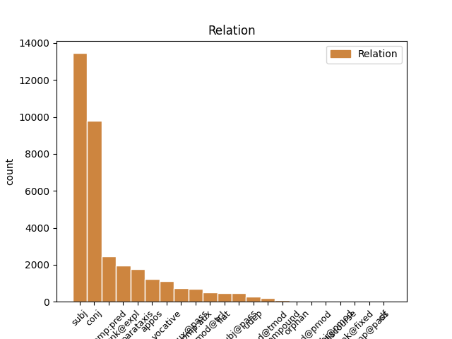
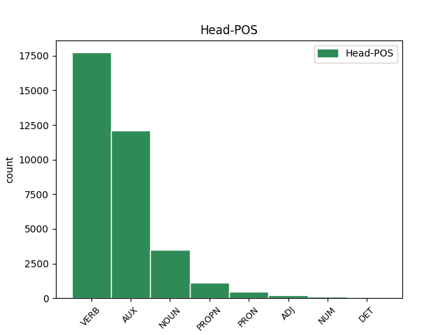
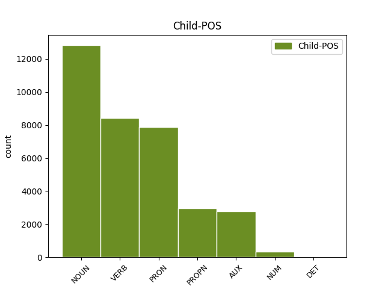

Distribution of features within this leaf



Agreement Rules sorted by frequency.
- When the dependent token is the subject(subj) of the head token, and the dependent token is NOUN.
1 Ducîndu _ _ _ _ 0 _ _ _
2 -l _ _ _ _ 0 _ _ _
3 , _ _ _ _ 0 _ _ _
4 ori _ _ _ _ 0 _ _ _
5 la _ _ _ _ 0 _ _ _
6 moșia _ _ _ _ 0 _ _ _
7 lui _ _ _ _ 0 _ _ _
8 , _ _ _ _ 0 _ _ _
9 sau _ _ _ _ 0 _ _ _
10 aiurea _ _ _ _ 0 _ _ _
11 unde _ _ _ _ 0 _ _ _
12 are _ _ _ _ 0 _ _ _
13 trebuință _ _ _ _ 0 _ _ _
14 , _ _ _ _ 0 _ _ _
15 pînă _ _ _ _ 0 _ _ _
16 la _ _ _ _ 0 _ _ _
17 un _ _ _ _ 0 _ _ _
18 loc _ _ _ _ 0 _ _ _
19 cale _ _ _ _ 0 _ _ _
20 de _ _ _ _ 0 _ _ _
21 șase _ _ _ _ 0 _ _ _
22 ceasuri _ _ _ _ 0 _ _ _
23 , _ _ _ _ 0 _ _ _
24 iar _ _ _ _ 0 _ _ _
25 cînd _ _ _ _ 0 _ _ _
26 va _ _ _ _ 0 _ _ _
27 fi _ _ _ _ 0 _ _ _
28 locul _ _ _ _ 0 _ _ _
29 unde _ _ _ _ 0 _ _ _
30 ceare _ _ _ _ 0 _ _ _
31 stăpînul _ _ _ _ 0 _ _ _
32 mai _ _ _ _ 0 _ _ _
33 depărtat _ _ _ _ 0 _ _ _
34 decît _ _ _ _ 0 _ _ _
35 cale _ _ _ _ 0 _ _ _
36 de _ _ _ _ 0 _ _ _
37 șase _ _ _ _ 0 _ _ _
38 ceasuri _ _ _ _ 0 _ _ _
39 , _ _ _ _ 0 _ _ _
40 sau _ _ _ _ 0 _ _ _
41 nu _ _ _ _ 0 _ _ _
42 va vrea AUX Vaip3s Mood=Ind|Number=Sing|Person=3|Tense=Pres 0 _ _ _
43 avea _ _ _ _ 0 _ _ _
44 stăpînul stăpân NOUN Ncmsry Case=Acc,Nom|Definite=Def|Gender=Masc|Number=Sing 42 subj _ ref=COMPLETARE.6
45 trebuință _ _ _ _ 0 _ _ _
46 de _ _ _ _ 0 _ _ _
47 leamne _ _ _ _ 0 _ _ _
48 , _ _ _ _ 0 _ _ _
49 atunci _ _ _ _ 0 _ _ _
50 să _ _ _ _ 0 _ _ _
51 plătească _ _ _ _ 0 _ _ _
52 clăcașul _ _ _ _ 0 _ _ _
53 cu _ _ _ _ 0 _ _ _
54 bani _ _ _ _ 0 _ _ _
55 , _ _ _ _ 0 _ _ _
56 carul _ _ _ _ 0 _ _ _
57 po _ _ _ _ 0 _ _ _
58 talere _ _ _ _ 0 _ _ _
59 trei _ _ _ _ 0 _ _ _
60 . _ _ _ _ 0 _ _ _
1 Prea _ _ _ _ 0 _ _ _
2 Înălțate _ _ _ _ 0 _ _ _
3 Doamne _ _ _ _ 0 _ _ _
4 ! _ _ _ _ 0 _ _ _
5 După _ _ _ _ 0 _ _ _
6 luminată _ _ _ _ 0 _ _ _
7 porunca _ _ _ _ 0 _ _ _
8 Mării _ _ _ _ 0 _ _ _
9 tale _ _ _ _ 0 _ _ _
10 adunîndu _ _ _ _ 0 _ _ _
11 -ne _ _ _ _ 0 _ _ _
12 în _ _ _ _ 0 _ _ _
13 multe _ _ _ _ 0 _ _ _
14 rînduri _ _ _ _ 0 _ _ _
15 cu _ _ _ _ 0 _ _ _
16 toții _ _ _ _ 0 _ _ _
17 la _ _ _ _ 0 _ _ _
18 un _ _ _ _ 0 _ _ _
19 loc _ _ _ _ 0 _ _ _
20 , _ _ _ _ 0 _ _ _
21 am avea AUX Vaip1p Mood=Ind|Number=Plur|Person=1|Tense=Pres 0 _ _ _
22 cetit _ _ _ _ 0 _ _ _
23 cu _ _ _ _ 0 _ _ _
24 luare _ _ _ _ 0 _ _ _
25 aminte _ _ _ _ 0 _ _ _
26 Pravila _ _ _ _ 0 _ _ _
27 ce _ _ _ _ 0 _ _ _
28 s _ _ _ _ 0 _ _ _
29 -au _ _ _ _ 0 _ _ _
30 alcătuit _ _ _ _ 0 _ _ _
31 de _ _ _ _ 0 _ _ _
32 cătră _ _ _ _ 0 _ _ _
33 Măria _ _ _ _ 0 _ _ _
34 ta _ _ _ _ 0 _ _ _
35 , _ _ _ _ 0 _ _ _
36 și _ _ _ _ 0 _ _ _
37 ne _ _ _ _ 0 _ _ _
38 pliroforisirăm pliroforisi VERB Vmis1p Mood=Ind|Number=Plur|Person=1|Tense=Past|VerbForm=Fin 21 conj _ ref=ANAFORA.1|SpaceAfter=No
39 , _ _ _ _ 0 _ _ _
40 că _ _ _ _ 0 _ _ _
41 alcătuirea _ _ _ _ 0 _ _ _
42 aceștii _ _ _ _ 0 _ _ _
43 Pravili _ _ _ _ 0 _ _ _
44 este _ _ _ _ 0 _ _ _
45 o _ _ _ _ 0 _ _ _
46 deslușire _ _ _ _ 0 _ _ _
47 a _ _ _ _ 0 _ _ _
48 Pravililor _ _ _ _ 0 _ _ _
49 Împărătești _ _ _ _ 0 _ _ _
50 , _ _ _ _ 0 _ _ _
51 ce _ _ _ _ 0 _ _ _
52 să _ _ _ _ 0 _ _ _
53 obicinuesc _ _ _ _ 0 _ _ _
54 aici _ _ _ _ 0 _ _ _
55 în _ _ _ _ 0 _ _ _
56 pămîntul _ _ _ _ 0 _ _ _
57 nostru _ _ _ _ 0 _ _ _
58 , _ _ _ _ 0 _ _ _
59 și _ _ _ _ 0 _ _ _
60 a _ _ _ _ 0 _ _ _
61 vechilor _ _ _ _ 0 _ _ _
62 , _ _ _ _ 0 _ _ _
63 și _ _ _ _ 0 _ _ _
64 a _ _ _ _ 0 _ _ _
65 canonisitelor _ _ _ _ 0 _ _ _
66 obiceaiuri _ _ _ _ 0 _ _ _
67 ale _ _ _ _ 0 _ _ _
68 pămîntului _ _ _ _ 0 _ _ _
69 , _ _ _ _ 0 _ _ _
70 nefiind _ _ _ _ 0 _ _ _
71 împotrivitoare _ _ _ _ 0 _ _ _
72 celor _ _ _ _ 0 _ _ _
73 vechi _ _ _ _ 0 _ _ _
74 urmate _ _ _ _ 0 _ _ _
75 pînă _ _ _ _ 0 _ _ _
76 acum _ _ _ _ 0 _ _ _
77 . _ _ _ _ 0 _ _ _
1 Iară _ _ _ _ 0 _ _ _
2 cînd _ _ _ _ 0 _ _ _
3 stăpînul _ _ _ _ 0 _ _ _
4 nu _ _ _ _ 0 _ _ _
5 va _ _ _ _ 0 _ _ _
6 avea _ _ _ _ 0 _ _ _
7 trebuință _ _ _ _ 0 _ _ _
8 de _ _ _ _ 0 _ _ _
9 arătură _ _ _ _ 0 _ _ _
10 , _ _ _ _ 0 _ _ _
11 și _ _ _ _ 0 _ _ _
12 va _ _ _ _ 0 _ _ _
13 ceare _ _ _ _ 0 _ _ _
14 bani _ _ _ _ 0 _ _ _
15 , _ _ _ _ 0 _ _ _
16 să _ _ _ _ 0 _ _ _
17 ia _ _ _ _ 0 _ _ _
18 de _ _ _ _ 0 _ _ _
19 plug _ _ _ _ 0 _ _ _
20 talere _ _ _ _ 0 _ _ _
21 patru _ _ _ _ 0 _ _ _
22 , _ _ _ _ 0 _ _ _
23 pentru _ _ _ _ 0 _ _ _
24 ziua _ _ _ _ 0 _ _ _
25 de _ _ _ _ 0 _ _ _
26 arătură _ _ _ _ 0 _ _ _
27 , _ _ _ _ 0 _ _ _
28 plătindu _ _ _ _ 0 _ _ _
29 -i _ _ _ _ 0 _ _ _
30 acești _ _ _ _ 0 _ _ _
31 bani _ _ _ _ 0 _ _ _
32 toți _ _ _ _ 0 _ _ _
33 oamenii _ _ _ _ 0 _ _ _
34 cîți cât PRON Pw3mpr Case=Acc,Nom|Gender=Masc|Number=Plur|Person=3|PronType=Int,Rel 35 subj _ ref=COMPLETARE.4
35 sînt fi AUX Vaip3p Mood=Ind|Number=Plur|Person=3|Tense=Pres 0 _ _ _
36 întovărășiți _ _ _ _ 0 _ _ _
37 la _ _ _ _ 0 _ _ _
38 acest _ _ _ _ 0 _ _ _
39 plug _ _ _ _ 0 _ _ _
40 . _ _ _ _ 0 _ _ _
1 Să _ _ _ _ 0 _ _ _
2 dea _ _ _ _ 0 _ _ _
3 clăcașul _ _ _ _ 0 _ _ _
4 la _ _ _ _ 0 _ _ _
5 stăpînul _ _ _ _ 0 _ _ _
6 moșii _ _ _ _ 0 _ _ _
7 o _ _ _ _ 0 _ _ _
8 găină găină NOUN Ncfsrn Case=Acc,Nom|Definite=Ind|Gender=Fem|Number=Sing 0 _ _ _
9 de _ _ _ _ 0 _ _ _
10 Crăciun _ _ _ _ 0 _ _ _
11 și _ _ _ _ 0 _ _ _
12 un _ _ _ _ 0 _ _ _
13 puiu pui NOUN Ncmsrn Case=Acc,Nom|Definite=Ind|Gender=Masc|Number=Sing 8 conj _ ref=COMPLETARE.7
14 de _ _ _ _ 0 _ _ _
15 găină _ _ _ _ 0 _ _ _
16 de _ _ _ _ 0 _ _ _
17 sînt _ _ _ _ 0 _ _ _
18 Pietru _ _ _ _ 0 _ _ _
19 ce _ _ _ _ 0 _ _ _
20 sînt _ _ _ _ 0 _ _ _
21 obicinuite _ _ _ _ 0 _ _ _
22 , _ _ _ _ 0 _ _ _
23 făr _ _ _ _ 0 _ _ _
24 de _ _ _ _ 0 _ _ _
25 a _ _ _ _ 0 _ _ _
26 fi _ _ _ _ 0 _ _ _
27 volnic _ _ _ _ 0 _ _ _
28 acel _ _ _ _ 0 _ _ _
29 stăpîn _ _ _ _ 0 _ _ _
30 de _ _ _ _ 0 _ _ _
31 a _ _ _ _ 0 _ _ _
32 ceare _ _ _ _ 0 _ _ _
33 să _ _ _ _ 0 _ _ _
34 i _ _ _ _ 0 _ _ _
35 le _ _ _ _ 0 _ _ _
36 plătească _ _ _ _ 0 _ _ _
37 clăcașii _ _ _ _ 0 _ _ _
38 în _ _ _ _ 0 _ _ _
39 bani _ _ _ _ 0 _ _ _
40 , _ _ _ _ 0 _ _ _
41 ci _ _ _ _ 0 _ _ _
42 să _ _ _ _ 0 _ _ _
43 le _ _ _ _ 0 _ _ _
44 priimească _ _ _ _ 0 _ _ _
45 în _ _ _ _ 0 _ _ _
46 natură _ _ _ _ 0 _ _ _
47 . _ _ _ _ 0 _ _ _
1 De _ _ _ _ 0 _ _ _
2 aceaia _ _ _ _ 0 _ _ _
3 ne _ _ _ _ 0 _ _ _
4 rugăm _ _ _ _ 0 _ _ _
5 , _ _ _ _ 0 _ _ _
6 să _ _ _ _ 0 _ _ _
7 binevoești binevoești VERB Vmsp2s Mood=Sub|Number=Sing|Person=2|Tense=Pres|VerbForm=Fin 0 _ _ _
8 Măriia Măriia PROPN Npfsry Case=Acc,Nom|Definite=Def|Gender=Fem|Number=Sing 7 subj _ ref=ANAFORA.2
9 ta _ _ _ _ 0 _ _ _
10 a _ _ _ _ 0 _ _ _
11 porunci _ _ _ _ 0 _ _ _
12 să _ _ _ _ 0 _ _ _
13 să _ _ _ _ 0 _ _ _
14 și _ _ _ _ 0 _ _ _
15 tipărească _ _ _ _ 0 _ _ _
16 . _ _ _ _ 0 _ _ _
1 De _ _ _ _ 0 _ _ _
2 aceaia _ _ _ _ 0 _ _ _
3 ne eu PRON Pp1-pa--------w Case=Acc|Number=Plur|Person=1|PronType=Prs|Strength=Weak 4 unk@expl _ ref=ANAFORA.2
4 rugăm ruga VERB Vmip1p Mood=Ind|Number=Plur|Person=1|Tense=Pres|VerbForm=Fin 0 _ _ _
5 , _ _ _ _ 0 _ _ _
6 să _ _ _ _ 0 _ _ _
7 binevoești _ _ _ _ 0 _ _ _
8 Măriia _ _ _ _ 0 _ _ _
9 ta _ _ _ _ 0 _ _ _
10 a _ _ _ _ 0 _ _ _
11 porunci _ _ _ _ 0 _ _ _
12 să _ _ _ _ 0 _ _ _
13 să _ _ _ _ 0 _ _ _
14 și _ _ _ _ 0 _ _ _
15 tipărească _ _ _ _ 0 _ _ _
16 . _ _ _ _ 0 _ _ _
1 Pentru _ _ _ _ 0 _ _ _
2 carul _ _ _ _ 0 _ _ _
3 de _ _ _ _ 0 _ _ _
4 leamne _ _ _ _ 0 _ _ _
5 , _ _ _ _ 0 _ _ _
6 sînt fi AUX Vaip3p Mood=Ind|Number=Plur|Person=3|Tense=Pres 0 _ _ _
7 datori dator NOUN Ncmprn Case=Acc,Nom|Definite=Ind|Gender=Masc|Number=Plur 6 comp:pred _ ref=COMPLETARE.5
8 clăcașii _ _ _ _ 0 _ _ _
9 a _ _ _ _ 0 _ _ _
10 -l _ _ _ _ 0 _ _ _
11 aduce _ _ _ _ 0 _ _ _
12 stăpînului _ _ _ _ 0 _ _ _
13 moșii _ _ _ _ 0 _ _ _
14 la _ _ _ _ 0 _ _ _
15 Crăciun _ _ _ _ 0 _ _ _
16 în _ _ _ _ 0 _ _ _
17 natură _ _ _ _ 0 _ _ _
18 . _ _ _ _ 0 _ _ _
1 Care _ _ _ _ 0 _ _ _
2 s _ _ _ _ 0 _ _ _
3 -au _ _ _ _ 0 _ _ _
4 întărit întări VERB Vmp--sm-p Gender=Masc|Number=Sing|Polarity=Pos|VerbForm=Part 0 _ _ _
5 și _ _ _ _ 0 _ _ _
6 de _ _ _ _ 0 _ _ _
7 Domnia _ _ _ _ 0 _ _ _
8 mea _ _ _ _ 0 _ _ _
9 legiuindu _ _ _ _ 0 _ _ _
10 -să _ _ _ _ 0 _ _ _
11 și _ _ _ _ 0 _ _ _
12 aceaste _ _ _ _ 0 _ _ _
13 Ponturi _ _ _ _ 0 _ _ _
14 , _ _ _ _ 0 _ _ _
15 adăogat _ _ _ _ 0 _ _ _
16 în _ _ _ _ 0 _ _ _
17 pravela _ _ _ _ 0 _ _ _
18 pămîntului _ _ _ _ 0 _ _ _
19 , _ _ _ _ 0 _ _ _
20 supt _ _ _ _ 0 _ _ _
21 peceatea _ _ _ _ 0 _ _ _
22 Domnii _ _ _ _ 0 _ _ _
23 meale _ _ _ _ 0 _ _ _
24 precum _ _ _ _ 0 _ _ _
25 să _ _ _ _ 0 _ _ _
26 arată _ _ _ _ 0 _ _ _
27 mai _ _ _ _ 0 _ _ _
28 sus _ _ _ _ 0 _ _ _
29 , _ _ _ _ 0 _ _ _
30 care _ _ _ _ 0 _ _ _
31 s _ _ _ _ 0 _ _ _
32 -au avea AUX Vaip3s Mood=Ind|Number=Sing|Person=3|Tense=Pres 4 conj _ ref=COMPLETARE.10
33 și _ _ _ _ 0 _ _ _
34 publicarisit _ _ _ _ 0 _ _ _
35 prin _ _ _ _ 0 _ _ _
36 toate _ _ _ _ 0 _ _ _
37 Judecătoriile _ _ _ _ 0 _ _ _
38 din _ _ _ _ 0 _ _ _
39 Domneasca _ _ _ _ 0 _ _ _
40 noastră _ _ _ _ 0 _ _ _
41 Ţară _ _ _ _ 0 _ _ _
42 , _ _ _ _ 0 _ _ _
43 și _ _ _ _ 0 _ _ _
44 cătră _ _ _ _ 0 _ _ _
45 toți _ _ _ _ 0 _ _ _
46 lăcuitorii _ _ _ _ 0 _ _ _
47 de _ _ _ _ 0 _ _ _
48 obște _ _ _ _ 0 _ _ _
49 ca _ _ _ _ 0 _ _ _
50 să _ _ _ _ 0 _ _ _
51 fie _ _ _ _ 0 _ _ _
52 știute _ _ _ _ 0 _ _ _
53 și _ _ _ _ 0 _ _ _
54 să _ _ _ _ 0 _ _ _
55 se _ _ _ _ 0 _ _ _
56 urmeaze _ _ _ _ 0 _ _ _
57 făr _ _ _ _ 0 _ _ _
58 de _ _ _ _ 0 _ _ _
59 strămutare _ _ _ _ 0 _ _ _
60 . _ _ _ _ 0 _ _ _
1 Şi _ _ _ _ 0 _ _ _
2 dzise _ _ _ _ 0 _ _ _
3 altul _ _ _ _ 0 _ _ _
4 : _ _ _ _ 0 _ _ _
5 " _ _ _ _ 0 _ _ _
6 Doamne domn NOUN Ncmsvn Case=Voc|Definite=Ind|Gender=Masc|Number=Sing 9 vocative _ _
7 împărate _ _ _ _ 0 _ _ _
8 , _ _ _ _ 0 _ _ _
9 păzeaște păzi VERB Vmm-2s--p Mood=Ind|Number=Sing|Person=3|Tense=Pres|VerbForm=Fin 0 _ _ _
10 -te _ _ _ _ 0 _ _ _
11 de _ _ _ _ 0 _ _ _
12 Cantida _ _ _ _ 0 _ _ _
13 , _ _ _ _ 0 _ _ _
14 să _ _ _ _ 0 _ _ _
15 nu _ _ _ _ 0 _ _ _
16 fie _ _ _ _ 0 _ _ _
17 iscoadă _ _ _ _ 0 _ _ _
18 , _ _ _ _ 0 _ _ _
19 că _ _ _ _ 0 _ _ _
20 dăunăzi _ _ _ _ 0 _ _ _
21 l- _ _ _ _ 0 _ _ _
22 am _ _ _ _ 0 _ _ _
23 văzut _ _ _ _ 0 _ _ _
24 în _ _ _ _ 0 _ _ _
25 oastea _ _ _ _ 0 _ _ _
26 elinilor _ _ _ _ 0 _ _ _
27 " _ _ _ _ 0 _ _ _
28 . _ _ _ _ 0 _ _ _
1 Din _ _ _ _ 0 _ _ _
2 Luminată _ _ _ _ 0 _ _ _
3 poruncă _ _ _ _ 0 _ _ _
4 a _ _ _ _ 0 _ _ _
5 Mării _ _ _ _ 0 _ _ _
6 sale _ _ _ _ 0 _ _ _
7 Prea _ _ _ _ 0 _ _ _
8 Înălțatului _ _ _ _ 0 _ _ _
9 nostru _ _ _ _ 0 _ _ _
10 Domn _ _ _ _ 0 _ _ _
11 Io _ _ _ _ 0 _ _ _
12 Ioann _ _ _ _ 0 _ _ _
13 Gheorghie _ _ _ _ 0 _ _ _
14 Caragea Caragea PROPN Npmsry Case=Acc,Nom|Definite=Def|Gender=Masc|Number=Sing 0 _ _ _
15 , _ _ _ _ 0 _ _ _
16 Vv voievod NOUN Ncmsrn Case=Acc,Nom|Definite=Ind|Gender=Masc|Number=Sing 14 appos _ ref=ANAFORA.3|SpaceAfter=No
17 . _ _ _ _ 0 _ _ _
1 Iară _ _ _ _ 0 _ _ _
2 cine _ _ _ _ 0 _ _ _
3 va _ _ _ _ 0 _ _ _
4 stăpîni _ _ _ _ 0 _ _ _
5 cu _ _ _ _ 0 _ _ _
6 bună _ _ _ _ 0 _ _ _
7 credință _ _ _ _ 0 _ _ _
8 lucru _ _ _ _ 0 _ _ _
9 strein _ _ _ _ 0 _ _ _
10 , _ _ _ _ 0 _ _ _
11 acela _ _ _ _ 0 _ _ _
12 cînd _ _ _ _ 0 _ _ _
13 să _ _ _ _ 0 _ _ _
14 va _ _ _ _ 0 _ _ _
15 lua _ _ _ _ 0 _ _ _
16 prin _ _ _ _ 0 _ _ _
17 judecată _ _ _ _ 0 _ _ _
18 lucrul _ _ _ _ 0 _ _ _
19 , _ _ _ _ 0 _ _ _
20 să _ _ _ _ 0 _ _ _
21 nu _ _ _ _ 0 _ _ _
22 întoarcă _ _ _ _ 0 _ _ _
23 roadele _ _ _ _ 0 _ _ _
24 , _ _ _ _ 0 _ _ _
25 afară _ _ _ _ 0 _ _ _
26 numai _ _ _ _ 0 _ _ _
27 pentru _ _ _ _ 0 _ _ _
28 lucrul _ _ _ _ 0 _ _ _
29 cel _ _ _ _ 0 _ _ _
30 cumpărat cumparat VERB Vmp--sm-p Gender=Masc|Number=Sing|Polarity=Pos|VerbForm=Part 0 _ _ _
31 ( _ _ _ _ 0 _ _ _
32 vezi vedea VERB Vmm-2s--p Mood=Imp|Number=Sing|Person=2|Polarity=Pos|VerbForm=Fin 30 parataxis _ ref=PART_V_CAP_3.9b
33 pentru _ _ _ _ 0 _ _ _
34 vînzare _ _ _ _ 0 _ _ _
35 la _ _ _ _ 0 _ _ _
36 32 _ _ _ _ 0 _ _ _
37 ) _ _ _ _ 0 _ _ _
38 . _ _ _ _ 0 _ _ _
1 Cînd _ _ _ _ 0 _ _ _
2 să _ _ _ _ 0 _ _ _
3 provaliseaște _ _ _ _ 0 _ _ _
4 jurămînt _ _ _ _ 0 _ _ _
5 de _ _ _ _ 0 _ _ _
6 cătră _ _ _ _ 0 _ _ _
7 judecătoriu _ _ _ _ 0 _ _ _
8 , _ _ _ _ 0 _ _ _
9 atunci _ _ _ _ 0 _ _ _
10 iaste fi AUX Vaip3s Mood=Ind|Number=Sing|Person=3|Tense=Pres 0 _ _ _
11 silit sili VERB Vmp--sm-p Gender=Masc|Number=Sing|Polarity=Pos|VerbForm=Part 10 comp:aux@pass _ ref=PART_V_CAP_2c.47
12 cui _ _ _ _ 0 _ _ _
13 să _ _ _ _ 0 _ _ _
14 provaliseaște _ _ _ _ 0 _ _ _
15 jurămîntul _ _ _ _ 0 _ _ _
16 ori _ _ _ _ 0 _ _ _
17 să _ _ _ _ 0 _ _ _
18 jure _ _ _ _ 0 _ _ _
19 și _ _ _ _ 0 _ _ _
20 să _ _ _ _ 0 _ _ _
21 să _ _ _ _ 0 _ _ _
22 îndrepteze _ _ _ _ 0 _ _ _
23 , _ _ _ _ 0 _ _ _
24 ori _ _ _ _ 0 _ _ _
25 nejurînd _ _ _ _ 0 _ _ _
26 să _ _ _ _ 0 _ _ _
27 să _ _ _ _ 0 _ _ _
28 osîndească _ _ _ _ 0 _ _ _
29 . _ _ _ _ 0 _ _ _
1 Care _ _ _ _ 0 _ _ _
2 s _ _ _ _ 0 _ _ _
3 -au _ _ _ _ 0 _ _ _
4 întărit _ _ _ _ 0 _ _ _
5 și _ _ _ _ 0 _ _ _
6 de _ _ _ _ 0 _ _ _
7 Domnia _ _ _ _ 0 _ _ _
8 mea _ _ _ _ 0 _ _ _
9 legiuindu _ _ _ _ 0 _ _ _
10 -să _ _ _ _ 0 _ _ _
11 și _ _ _ _ 0 _ _ _
12 aceaste _ _ _ _ 0 _ _ _
13 Ponturi _ _ _ _ 0 _ _ _
14 , _ _ _ _ 0 _ _ _
15 adăogat _ _ _ _ 0 _ _ _
16 în _ _ _ _ 0 _ _ _
17 pravela _ _ _ _ 0 _ _ _
18 pămîntului _ _ _ _ 0 _ _ _
19 , _ _ _ _ 0 _ _ _
20 supt _ _ _ _ 0 _ _ _
21 peceatea _ _ _ _ 0 _ _ _
22 Domnii _ _ _ _ 0 _ _ _
23 meale _ _ _ _ 0 _ _ _
24 precum _ _ _ _ 0 _ _ _
25 să _ _ _ _ 0 _ _ _
26 arată _ _ _ _ 0 _ _ _
27 mai _ _ _ _ 0 _ _ _
28 sus _ _ _ _ 0 _ _ _
29 , _ _ _ _ 0 _ _ _
30 care _ _ _ _ 0 _ _ _
31 s _ _ _ _ 0 _ _ _
32 -au avea AUX Vaip3s Mood=Ind|Number=Sing|Person=3|Tense=Pres 0 _ _ _
33 și _ _ _ _ 0 _ _ _
34 publicarisit publicarisi VERB Vmp--sm-p Gender=Masc|Number=Sing|Polarity=Pos|VerbForm=Part 32 comp:aux _ ref=COMPLETARE.10
35 prin _ _ _ _ 0 _ _ _
36 toate _ _ _ _ 0 _ _ _
37 Judecătoriile _ _ _ _ 0 _ _ _
38 din _ _ _ _ 0 _ _ _
39 Domneasca _ _ _ _ 0 _ _ _
40 noastră _ _ _ _ 0 _ _ _
41 Ţară _ _ _ _ 0 _ _ _
42 , _ _ _ _ 0 _ _ _
43 și _ _ _ _ 0 _ _ _
44 cătră _ _ _ _ 0 _ _ _
45 toți _ _ _ _ 0 _ _ _
46 lăcuitorii _ _ _ _ 0 _ _ _
47 de _ _ _ _ 0 _ _ _
48 obște _ _ _ _ 0 _ _ _
49 ca _ _ _ _ 0 _ _ _
50 să _ _ _ _ 0 _ _ _
51 fie _ _ _ _ 0 _ _ _
52 știute _ _ _ _ 0 _ _ _
53 și _ _ _ _ 0 _ _ _
54 să _ _ _ _ 0 _ _ _
55 se _ _ _ _ 0 _ _ _
56 urmeaze _ _ _ _ 0 _ _ _
57 făr _ _ _ _ 0 _ _ _
58 de _ _ _ _ 0 _ _ _
59 strămutare _ _ _ _ 0 _ _ _
60 . _ _ _ _ 0 _ _ _
1 Cînd _ _ _ _ 0 _ _ _
2 vechilul _ _ _ _ 0 _ _ _
3 știind _ _ _ _ 0 _ _ _
4 moartea _ _ _ _ 0 _ _ _
5 nu _ _ _ _ 0 _ _ _
6 va _ _ _ _ 0 _ _ _
7 conteni _ _ _ _ 0 _ _ _
8 , _ _ _ _ 0 _ _ _
9 atunci _ _ _ _ 0 _ _ _
10 orice _ _ _ _ 0 _ _ _
11 pagubă _ _ _ _ 0 _ _ _
12 să _ _ _ _ 0 _ _ _
13 va _ _ _ _ 0 _ _ _
14 pricinui _ _ _ _ 0 _ _ _
15 din _ _ _ _ 0 _ _ _
16 orice _ _ _ _ 0 _ _ _
17 pricină _ _ _ _ 0 _ _ _
18 , _ _ _ _ 0 _ _ _
19 iaste _ _ _ _ 0 _ _ _
20 datoriu _ _ _ _ 0 _ _ _
21 a _ _ _ _ 0 _ _ _
22 o _ _ _ _ 0 _ _ _
23 răspunde _ _ _ _ 0 _ _ _
24 , _ _ _ _ 0 _ _ _
25 căci _ _ _ _ 0 _ _ _
26 de _ _ _ _ 0 _ _ _
27 contenea _ _ _ _ 0 _ _ _
28 , _ _ _ _ 0 _ _ _
29 nu _ _ _ _ 0 _ _ _
30 o _ _ _ _ 0 _ _ _
31 cerca încerca VERB Vmii3s Mood=Ind|Number=Sing|Person=3|Tense=Imp|VerbForm=Fin 0 _ _ _
32 poate putea AUX Vaip3s Mood=Ind|Number=Sing|Person=3|Tense=Pres 31 parataxis _ ref=PART_III_CAP_19.20
33 moștenitoriul _ _ _ _ 0 _ _ _
34 . _ _ _ _ 0 _ _ _
1 Să _ _ _ _ 0 _ _ _
2 dea _ _ _ _ 0 _ _ _
3 clăcașul _ _ _ _ 0 _ _ _
4 la _ _ _ _ 0 _ _ _
5 stăpînul _ _ _ _ 0 _ _ _
6 moșii _ _ _ _ 0 _ _ _
7 o _ _ _ _ 0 _ _ _
8 găină _ _ _ _ 0 _ _ _
9 de _ _ _ _ 0 _ _ _
10 Crăciun _ _ _ _ 0 _ _ _
11 și _ _ _ _ 0 _ _ _
12 un _ _ _ _ 0 _ _ _
13 puiu _ _ _ _ 0 _ _ _
14 de _ _ _ _ 0 _ _ _
15 găină _ _ _ _ 0 _ _ _
16 de _ _ _ _ 0 _ _ _
17 sînt _ _ _ _ 0 _ _ _
18 Pietru _ _ _ _ 0 _ _ _
19 ce _ _ _ _ 0 _ _ _
20 sînt fi AUX Vaip3p Mood=Ind|Number=Plur|Person=3|Tense=Pres 0 _ _ _
21 obicinuite obișnui VERB Vmp--pf-p Gender=Fem|Number=Plur|Polarity=Pos|VerbForm=Part 20 comp:pred _ ref=COMPLETARE.7|SpaceAfter=No
22 , _ _ _ _ 0 _ _ _
23 făr _ _ _ _ 0 _ _ _
24 de _ _ _ _ 0 _ _ _
25 a _ _ _ _ 0 _ _ _
26 fi _ _ _ _ 0 _ _ _
27 volnic _ _ _ _ 0 _ _ _
28 acel _ _ _ _ 0 _ _ _
29 stăpîn _ _ _ _ 0 _ _ _
30 de _ _ _ _ 0 _ _ _
31 a _ _ _ _ 0 _ _ _
32 ceare _ _ _ _ 0 _ _ _
33 să _ _ _ _ 0 _ _ _
34 i _ _ _ _ 0 _ _ _
35 le _ _ _ _ 0 _ _ _
36 plătească _ _ _ _ 0 _ _ _
37 clăcașii _ _ _ _ 0 _ _ _
38 în _ _ _ _ 0 _ _ _
39 bani _ _ _ _ 0 _ _ _
40 , _ _ _ _ 0 _ _ _
41 ci _ _ _ _ 0 _ _ _
42 să _ _ _ _ 0 _ _ _
43 le _ _ _ _ 0 _ _ _
44 priimească _ _ _ _ 0 _ _ _
45 în _ _ _ _ 0 _ _ _
46 natură _ _ _ _ 0 _ _ _
47 . _ _ _ _ 0 _ _ _
1 Așadar _ _ _ _ 0 _ _ _
2 , _ _ _ _ 0 _ _ _
3 Dălea Delea PROPN Npmsry Case=Acc,Nom|Definite=Def|Gender=Masc|Number=Sing 0 _ _ _
4 Dămean Damian PROPN Npmsrn Case=Acc,Nom|Definite=Ind|Gender=Masc|Number=Sing 3 flat _ SpaceAfter=No
5 , _ _ _ _ 0 _ _ _
6 Copil _ _ _ _ 0 _ _ _
7 mic _ _ _ _ 0 _ _ _
8 , _ _ _ _ 0 _ _ _
9 dară _ _ _ _ 0 _ _ _
10 viclean _ _ _ _ 0 _ _ _
11 , _ _ _ _ 0 _ _ _
12 A _ _ _ _ 0 _ _ _
13 scăpat _ _ _ _ 0 _ _ _
14 viaţa _ _ _ _ 0 _ _ _
15 sa _ _ _ _ 0 _ _ _
16 Şi- _ _ _ _ 0 _ _ _
17 a _ _ _ _ 0 _ _ _
18 omorît _ _ _ _ 0 _ _ _
19 pe _ _ _ _ 0 _ _ _
20 Sîla _ _ _ _ 0 _ _ _
21 . _ _ _ _ 0 _ _ _
1 Păntru _ _ _ _ 0 _ _ _
2 păcatul _ _ _ _ 0 _ _ _
3 lăcomiei _ _ _ _ 0 _ _ _
4 scrie _ _ _ _ 0 _ _ _
5 în _ _ _ _ 0 _ _ _
6 Cartea _ _ _ _ 0 _ _ _
7 Veache _ _ _ _ 0 _ _ _
8 că _ _ _ _ 0 _ _ _
9 Dumnezeu _ _ _ _ 0 _ _ _
10 , _ _ _ _ 0 _ _ _
11 cînd _ _ _ _ 0 _ _ _
12 făcu _ _ _ _ 0 _ _ _
13 pre _ _ _ _ 0 _ _ _
14 omul _ _ _ _ 0 _ _ _
15 , _ _ _ _ 0 _ _ _
16 pre _ _ _ _ 0 _ _ _
17 Adam Adam PROPN Npmsrn Case=Acc,Nom|Definite=Ind|Gender=Masc|Number=Sing 0 _ _ _
18 și _ _ _ _ 0 _ _ _
19 Eva Eva PROPN Npfsry Case=Acc,Nom|Definite=Def|Gender=Fem|Number=Sing 17 conj _ SpaceAfter=No
20 , _ _ _ _ 0 _ _ _
21 și _ _ _ _ 0 _ _ _
22 -i _ _ _ _ 0 _ _ _
23 puse _ _ _ _ 0 _ _ _
24 în _ _ _ _ 0 _ _ _
25 raiu _ _ _ _ 0 _ _ _
26 și _ _ _ _ 0 _ _ _
27 lă _ _ _ _ 0 _ _ _
28 deade _ _ _ _ 0 _ _ _
29 voie _ _ _ _ 0 _ _ _
30 să _ _ _ _ 0 _ _ _
31 facă _ _ _ _ 0 _ _ _
32 ce _ _ _ _ 0 _ _ _
33 vor _ _ _ _ 0 _ _ _
34 vrea _ _ _ _ 0 _ _ _
35 , _ _ _ _ 0 _ _ _
36 numai _ _ _ _ 0 _ _ _
37 să _ _ _ _ 0 _ _ _
38 nu _ _ _ _ 0 _ _ _
39 se _ _ _ _ 0 _ _ _
40 tinză _ _ _ _ 0 _ _ _
41 spre _ _ _ _ 0 _ _ _
42 lemnu _ _ _ _ 0 _ _ _
43 cela _ _ _ _ 0 _ _ _
44 ce _ _ _ _ 0 _ _ _
45 -i _ _ _ _ 0 _ _ _
46 învăță _ _ _ _ 0 _ _ _
47 Dumnezeu _ _ _ _ 0 _ _ _
48 . _ _ _ _ 0 _ _ _
1 Cînd _ _ _ _ 0 _ _ _
2 cel _ _ _ _ 0 _ _ _
3 pîrît pârî VERB Vmp--sm-p Gender=Masc|Number=Sing|Polarity=Pos|VerbForm=Part 7 subj _ ref=PART_V_CAP_2e.56
4 pentru _ _ _ _ 0 _ _ _
5 vină _ _ _ _ 0 _ _ _
6 să _ _ _ _ 0 _ _ _
7 va vrea AUX Vaip3s Mood=Ind|Number=Sing|Person=3|Tense=Pres 0 _ _ _
8 dovedi _ _ _ _ 0 _ _ _
9 vinovat _ _ _ _ 0 _ _ _
10 , _ _ _ _ 0 _ _ _
11 și _ _ _ _ 0 _ _ _
12 va _ _ _ _ 0 _ _ _
13 tăgădui _ _ _ _ 0 _ _ _
14 , _ _ _ _ 0 _ _ _
15 ori _ _ _ _ 0 _ _ _
16 toată _ _ _ _ 0 _ _ _
17 vina _ _ _ _ 0 _ _ _
18 , _ _ _ _ 0 _ _ _
19 ori _ _ _ _ 0 _ _ _
20 parte _ _ _ _ 0 _ _ _
21 din _ _ _ _ 0 _ _ _
22 vină _ _ _ _ 0 _ _ _
23 , _ _ _ _ 0 _ _ _
24 atunci _ _ _ _ 0 _ _ _
25 să _ _ _ _ 0 _ _ _
26 să _ _ _ _ 0 _ _ _
27 căznească _ _ _ _ 0 _ _ _
28 ca _ _ _ _ 0 _ _ _
29 să _ _ _ _ 0 _ _ _
30 spue _ _ _ _ 0 _ _ _
31 adevărul _ _ _ _ 0 _ _ _
32 . _ _ _ _ 0 _ _ _
1 În _ _ _ _ 0 _ _ _
2 orașă _ _ _ _ 0 _ _ _
3 mari _ _ _ _ 0 _ _ _
4 sau _ _ _ _ 0 _ _ _
5 mici _ _ _ _ 0 _ _ _
6 și _ _ _ _ 0 _ _ _
7 în _ _ _ _ 0 _ _ _
8 sate _ _ _ _ 0 _ _ _
9 , _ _ _ _ 0 _ _ _
10 cînd _ _ _ _ 0 _ _ _
11 vecinul _ _ _ _ 0 _ _ _
12 zidește zidi VERB Vmip3s Mood=Ind|Number=Sing|Person=3|Tense=Pres|VerbForm=Fin 14 mod@tcl _ ref=PART_II_CAP_3.18|SpaceAfter=No
13 , _ _ _ _ 0 _ _ _
14 este fi AUX Vaip3s Mood=Ind|Number=Sing|Person=3|Tense=Pres 0 _ _ _
15 volnic _ _ _ _ 0 _ _ _
16 celalalt _ _ _ _ 0 _ _ _
17 vecin _ _ _ _ 0 _ _ _
18 , _ _ _ _ 0 _ _ _
19 de _ _ _ _ 0 _ _ _
20 socotește _ _ _ _ 0 _ _ _
21 că _ _ _ _ 0 _ _ _
22 să _ _ _ _ 0 _ _ _
23 vatămă _ _ _ _ 0 _ _ _
24 , _ _ _ _ 0 _ _ _
25 să _ _ _ _ 0 _ _ _
26 dea _ _ _ _ 0 _ _ _
27 de _ _ _ _ 0 _ _ _
28 știre _ _ _ _ 0 _ _ _
29 însuș _ _ _ _ 0 _ _ _
30 , _ _ _ _ 0 _ _ _
31 sau _ _ _ _ 0 _ _ _
32 printr- _ _ _ _ 0 _ _ _
33 altul _ _ _ _ 0 _ _ _
34 vecinului _ _ _ _ 0 _ _ _
35 , _ _ _ _ 0 _ _ _
36 sau _ _ _ _ 0 _ _ _
37 purtătoriului _ _ _ _ 0 _ _ _
38 de _ _ _ _ 0 _ _ _
39 grijă _ _ _ _ 0 _ _ _
40 , _ _ _ _ 0 _ _ _
41 sau _ _ _ _ 0 _ _ _
42 meșterilor _ _ _ _ 0 _ _ _
43 ca _ _ _ _ 0 _ _ _
44 să _ _ _ _ 0 _ _ _
45 nu _ _ _ _ 0 _ _ _
46 lucreze _ _ _ _ 0 _ _ _
47 . _ _ _ _ 0 _ _ _
1 Cînd _ _ _ _ 0 _ _ _
2 să _ _ _ _ 0 _ _ _
3 va vrea AUX Vaip3s Mood=Ind|Number=Sing|Person=3|Tense=Pres 0 _ _ _
4 scrie _ _ _ _ 0 _ _ _
5 legat legat NOUN Ncmsrn Case=Acc,Nom|Definite=Ind|Gender=Masc|Number=Sing 3 subj@pass _ ref=PART_IV_CAP_4.12|SpaceAfter=No
6 , _ _ _ _ 0 _ _ _
7 nu _ _ _ _ 0 _ _ _
8 să _ _ _ _ 0 _ _ _
9 înțeleg _ _ _ _ 0 _ _ _
10 și _ _ _ _ 0 _ _ _
11 părtile _ _ _ _ 0 _ _ _
12 ceale _ _ _ _ 0 _ _ _
13 neînchiiate _ _ _ _ 0 _ _ _
14 cu _ _ _ _ 0 _ _ _
15 acel _ _ _ _ 0 _ _ _
16 lucru _ _ _ _ 0 _ _ _
17 , _ _ _ _ 0 _ _ _
18 de _ _ _ _ 0 _ _ _
19 nu _ _ _ _ 0 _ _ _
20 să _ _ _ _ 0 _ _ _
21 vor _ _ _ _ 0 _ _ _
22 numi _ _ _ _ 0 _ _ _
23 în _ _ _ _ 0 _ _ _
24 diiată _ _ _ _ 0 _ _ _
25 , _ _ _ _ 0 _ _ _
26 cum _ _ _ _ 0 _ _ _
27 de _ _ _ _ 0 _ _ _
28 să _ _ _ _ 0 _ _ _
29 va _ _ _ _ 0 _ _ _
30 scrie _ _ _ _ 0 _ _ _
31 casă _ _ _ _ 0 _ _ _
32 nu _ _ _ _ 0 _ _ _
33 să _ _ _ _ 0 _ _ _
34 înțeleg _ _ _ _ 0 _ _ _
35 și _ _ _ _ 0 _ _ _
36 așternuturile _ _ _ _ 0 _ _ _
37 de _ _ _ _ 0 _ _ _
38 nu _ _ _ _ 0 _ _ _
39 să _ _ _ _ 0 _ _ _
40 vor _ _ _ _ 0 _ _ _
41 numi _ _ _ _ 0 _ _ _
42 și _ _ _ _ 0 _ _ _
43 ele _ _ _ _ 0 _ _ _
44 . _ _ _ _ 0 _ _ _
1 Cîți _ _ _ _ 0 _ _ _
2 din _ _ _ _ 0 _ _ _
3 cei _ _ _ _ 0 _ _ _
4 ce _ _ _ _ 0 _ _ _
5 au _ _ _ _ 0 _ _ _
6 judecată _ _ _ _ 0 _ _ _
7 vor vrea AUX Vaip3p Mood=Ind|Number=Plur|Person=3|Tense=Pres 24 subj _ ref=PART_V_CAP_4.5
8 da _ _ _ _ 0 _ _ _
9 în _ _ _ _ 0 _ _ _
10 scris _ _ _ _ 0 _ _ _
11 la _ _ _ _ 0 _ _ _
12 judecată _ _ _ _ 0 _ _ _
13 că _ _ _ _ 0 _ _ _
14 să _ _ _ _ 0 _ _ _
15 vor _ _ _ _ 0 _ _ _
16 mulțămi _ _ _ _ 0 _ _ _
17 pre _ _ _ _ 0 _ _ _
18 hotărîrea _ _ _ _ 0 _ _ _
19 acei _ _ _ _ 0 _ _ _
20 judecăți _ _ _ _ 0 _ _ _
21 , _ _ _ _ 0 _ _ _
22 aceia _ _ _ _ 0 _ _ _
23 nu _ _ _ _ 0 _ _ _
24 pot putea AUX Vaip3p Mood=Ind|Number=Plur|Person=3|Tense=Pres 0 _ _ _
25 porni _ _ _ _ 0 _ _ _
26 Apellație _ _ _ _ 0 _ _ _
27 . _ _ _ _ 0 _ _ _
1 Aseamenea _ _ _ _ 0 _ _ _
2 să _ _ _ _ 0 _ _ _
3 să _ _ _ _ 0 _ _ _
4 urmeaze _ _ _ _ 0 _ _ _
5 de _ _ _ _ 0 _ _ _
6 Dumnialui dumnealui PRON Pp3msr Case=Acc,Nom|Gender=Masc|Number=Sing|Person=3|PronType=Prs 0 _ _ _
7 Vel _ _ _ _ 0 _ _ _
8 Spătariu _ _ _ _ 0 _ _ _
9 , _ _ _ _ 0 _ _ _
10 Dumnialui dumnealui PRON Pp3msr Case=Acc,Nom|Gender=Masc|Number=Sing|Person=3|PronType=Prs 6 conj _ ref=PART_V_CAP_3.15d
11 Vel _ _ _ _ 0 _ _ _
12 Agă _ _ _ _ 0 _ _ _
13 și _ _ _ _ 0 _ _ _
14 de _ _ _ _ 0 _ _ _
15 Boerii _ _ _ _ 0 _ _ _
16 Ispravnici _ _ _ _ 0 _ _ _
17 , _ _ _ _ 0 _ _ _
18 cînd _ _ _ _ 0 _ _ _
19 iaste _ _ _ _ 0 _ _ _
20 vreo _ _ _ _ 0 _ _ _
21 hotărîre _ _ _ _ 0 _ _ _
22 de _ _ _ _ 0 _ _ _
23 la _ _ _ _ 0 _ _ _
24 judecățile _ _ _ _ 0 _ _ _
25 Dumnialor _ _ _ _ 0 _ _ _
26 . _ _ _ _ 0 _ _ _
1 Cine _ _ _ _ 0 _ _ _
2 cere _ _ _ _ 0 _ _ _
3 atunci _ _ _ _ 0 _ _ _
4 căștigă _ _ _ _ 0 _ _ _
5 , _ _ _ _ 0 _ _ _
6 cînd _ _ _ _ 0 _ _ _
7 va _ _ _ _ 0 _ _ _
8 dovedi _ _ _ _ 0 _ _ _
9 că _ _ _ _ 0 _ _ _
10 lucrul _ _ _ _ 0 _ _ _
11 ce _ _ _ _ 0 _ _ _
12 să _ _ _ _ 0 _ _ _
13 cere _ _ _ _ 0 _ _ _
14 iaste fi AUX Vaip3s Mood=Ind|Number=Sing|Person=3|Tense=Pres 0 _ _ _
15 al _ _ _ _ 0 _ _ _
16 lui el PRON Pd3mso Case=Dat,Gen|Gender=Masc|Number=Sing|Person=3|PronType=Dem 14 comp:pred _ ref=PART_V_CAP_2.4|SpaceAfter=No
17 , _ _ _ _ 0 _ _ _
18 iară _ _ _ _ 0 _ _ _
19 nu _ _ _ _ 0 _ _ _
20 cînd _ _ _ _ 0 _ _ _
21 va _ _ _ _ 0 _ _ _
22 dovedi _ _ _ _ 0 _ _ _
23 că _ _ _ _ 0 _ _ _
24 nu _ _ _ _ 0 _ _ _
25 iaste _ _ _ _ 0 _ _ _
26 al _ _ _ _ 0 _ _ _
27 protivnicului _ _ _ _ 0 _ _ _
28 său _ _ _ _ 0 _ _ _
29 . _ _ _ _ 0 _ _ _
1 Păntru _ _ _ _ 0 _ _ _
2 nesocotința _ _ _ _ 0 _ _ _
3 scrie _ _ _ _ 0 _ _ _
4 la _ _ _ _ 0 _ _ _
5 Otecinic _ _ _ _ 0 _ _ _
6 că _ _ _ _ 0 _ _ _
7 era _ _ _ _ 0 _ _ _
8 o _ _ _ _ 0 _ _ _
9 fată _ _ _ _ 0 _ _ _
10 de _ _ _ _ 0 _ _ _
11 o _ _ _ _ 0 _ _ _
12 chema chema VERB Vmii3s Mood=Ind|Number=Sing|Person=3|Tense=Imp|VerbForm=Fin 0 _ _ _
13 Aginta Aginta PROPN Npmsrn Case=Acc,Nom|Definite=Ind|Gender=Masc|Number=Sing 12 comp:pred _ _
14 și _ _ _ _ 0 _ _ _
15 era _ _ _ _ 0 _ _ _
16 cinstită _ _ _ _ 0 _ _ _
17 în _ _ _ _ 0 _ _ _
18 lume _ _ _ _ 0 _ _ _
19 mai _ _ _ _ 0 _ _ _
20 de _ _ _ _ 0 _ _ _
21 toate _ _ _ _ 0 _ _ _
22 . _ _ _ _ 0 _ _ _
1 Cine _ _ _ _ 0 _ _ _
2 va _ _ _ _ 0 _ _ _
3 arăta _ _ _ _ 0 _ _ _
4 copie _ _ _ _ 0 _ _ _
5 de _ _ _ _ 0 _ _ _
6 carte _ _ _ _ 0 _ _ _
7 , _ _ _ _ 0 _ _ _
8 iaste fi AUX Vaip3s Mood=Ind|Number=Sing|Person=3|Tense=Pres 0 _ _ _
9 datoriu _ _ _ _ 0 _ _ _
10 cînd _ _ _ _ 0 _ _ _
11 i _ _ _ _ 0 _ _ _
12 să _ _ _ _ 0 _ _ _
13 va vrea AUX Vaip3s Mood=Ind|Number=Sing|Person=3|Tense=Pres 8 mod@tcl _ ref=PART_V_CAP_2a.29
14 cere _ _ _ _ 0 _ _ _
15 să _ _ _ _ 0 _ _ _
16 scoață _ _ _ _ 0 _ _ _
17 și _ _ _ _ 0 _ _ _
18 pre _ _ _ _ 0 _ _ _
19 cea _ _ _ _ 0 _ _ _
20 adevărată _ _ _ _ 0 _ _ _
21 , _ _ _ _ 0 _ _ _
22 sau _ _ _ _ 0 _ _ _
23 îndată _ _ _ _ 0 _ _ _
24 avîndu _ _ _ _ 0 _ _ _
25 -o _ _ _ _ 0 _ _ _
26 la _ _ _ _ 0 _ _ _
27 îndemână _ _ _ _ 0 _ _ _
28 , _ _ _ _ 0 _ _ _
29 sau _ _ _ _ 0 _ _ _
30 cu _ _ _ _ 0 _ _ _
31 soroc _ _ _ _ 0 _ _ _
32 de _ _ _ _ 0 _ _ _
33 nu _ _ _ _ 0 _ _ _
34 o _ _ _ _ 0 _ _ _
35 va _ _ _ _ 0 _ _ _
36 avea _ _ _ _ 0 _ _ _
37 la _ _ _ _ 0 _ _ _
38 îndemână _ _ _ _ 0 _ _ _
39 . _ _ _ _ 0 _ _ _
1 Cine _ _ _ _ 0 _ _ _
2 va _ _ _ _ 0 _ _ _
3 pierde judeca VERB Vmii3s Mood=Ind|Number=Sing|Person=3|Tense=Imp|VerbForm=Fin 0 _ _ _
4 la _ _ _ _ 0 _ _ _
5 a _ _ _ _ 0 _ _ _
6 doao _ _ _ _ 0 _ _ _
7 cercetare _ _ _ _ 0 _ _ _
8 de _ _ _ _ 0 _ _ _
9 o _ _ _ _ 0 _ _ _
10 hotărâre _ _ _ _ 0 _ _ _
11 domnească _ _ _ _ 0 _ _ _
12 a _ _ _ _ 0 _ _ _
13 vreunui _ _ _ _ 0 _ _ _
14 domn _ _ _ _ 0 _ _ _
15 de _ _ _ _ 0 _ _ _
16 mai _ _ _ _ 0 _ _ _
17 nainte _ _ _ _ 0 _ _ _
18 , _ _ _ _ 0 _ _ _
19 acela acela PRON Pd3msr Case=Acc,Nom|Gender=Masc|Number=Sing|Person=3|PronType=Dem 3 appos _ ref=PART_V_CAP_3.14
20 să _ _ _ _ 0 _ _ _
21 plătească _ _ _ _ 0 _ _ _
22 protivnicului _ _ _ _ 0 _ _ _
23 său _ _ _ _ 0 _ _ _
24 și _ _ _ _ 0 _ _ _
25 cheltuiala _ _ _ _ 0 _ _ _
26 judecății _ _ _ _ 0 _ _ _
27 . _ _ _ _ 0 _ _ _
1 Din _ _ _ _ 0 _ _ _
2 Luminată _ _ _ _ 0 _ _ _
3 poruncă _ _ _ _ 0 _ _ _
4 a _ _ _ _ 0 _ _ _
5 Mării _ _ _ _ 0 _ _ _
6 sale _ _ _ _ 0 _ _ _
7 Prea _ _ _ _ 0 _ _ _
8 Înălțatului _ _ _ _ 0 _ _ _
9 nostru _ _ _ _ 0 _ _ _
10 Domn _ _ _ _ 0 _ _ _
11 Io io PRON Pp3msr Case=Acc,Nom|Gender=Masc|Number=Sing|Person=3|PronType=Prs 0 _ _ _
12 Ioann Ion PROPN Npmsrn Case=Acc,Nom|Definite=Ind|Gender=Masc|Number=Sing 11 appos _ ref=ANAFORA.3
13 Gheorghie _ _ _ _ 0 _ _ _
14 Caragea _ _ _ _ 0 _ _ _
15 , _ _ _ _ 0 _ _ _
16 Vv _ _ _ _ 0 _ _ _
17 . _ _ _ _ 0 _ _ _
1 Nebunilor _ _ _ _ 0 _ _ _
2 , _ _ _ _ 0 _ _ _
3 nevîrsnecilor _ _ _ _ 0 _ _ _
4 , _ _ _ _ 0 _ _ _
5 robilor _ _ _ _ 0 _ _ _
6 , _ _ _ _ 0 _ _ _
7 răsipitorilor _ _ _ _ 0 _ _ _
8 , _ _ _ _ 0 _ _ _
9 tîlharilor _ _ _ _ 0 _ _ _
10 , _ _ _ _ 0 _ _ _
11 furilor _ _ _ _ 0 _ _ _
12 , _ _ _ _ 0 _ _ _
13 prepunătorilor _ _ _ _ 0 _ _ _
14 , _ _ _ _ 0 _ _ _
15 martorilor _ _ _ _ 0 _ _ _
16 mincinoși _ _ _ _ 0 _ _ _
17 , _ _ _ _ 0 _ _ _
18 tăetorilor _ _ _ _ 0 _ _ _
19 de _ _ _ _ 0 _ _ _
20 bani _ _ _ _ 0 _ _ _
21 , _ _ _ _ 0 _ _ _
22 muflujilor _ _ _ _ 0 _ _ _
23 mincinoși _ _ _ _ 0 _ _ _
24 , _ _ _ _ 0 _ _ _
25 și _ _ _ _ 0 _ _ _
26 cîți cât PRON Pw3mpr Case=Acc,Nom|Gender=Masc|Number=Plur|Person=3|PronType=Int,Rel 27 subj@pass _ ref=PART_V_CAP_2c.46
27 sînt fi AUX Vaip3p Mood=Ind|Number=Plur|Person=3|Tense=Pres 0 _ _ _
28 știuți _ _ _ _ 0 _ _ _
29 că _ _ _ _ 0 _ _ _
30 au _ _ _ _ 0 _ _ _
31 puțină _ _ _ _ 0 _ _ _
32 evlavie _ _ _ _ 0 _ _ _
33 cătră _ _ _ _ 0 _ _ _
34 ceale _ _ _ _ 0 _ _ _
35 Domnezeești _ _ _ _ 0 _ _ _
36 , _ _ _ _ 0 _ _ _
37 acestora _ _ _ _ 0 _ _ _
38 nici _ _ _ _ 0 _ _ _
39 li _ _ _ _ 0 _ _ _
40 să _ _ _ _ 0 _ _ _
41 provaliseaște _ _ _ _ 0 _ _ _
42 jurămînt _ _ _ _ 0 _ _ _
43 , _ _ _ _ 0 _ _ _
44 nici _ _ _ _ 0 _ _ _
45 li _ _ _ _ 0 _ _ _
46 să _ _ _ _ 0 _ _ _
47 dă _ _ _ _ 0 _ _ _
48 credință _ _ _ _ 0 _ _ _
49 daca _ _ _ _ 0 _ _ _
50 vor _ _ _ _ 0 _ _ _
51 jura _ _ _ _ 0 _ _ _
52 . _ _ _ _ 0 _ _ _
1 Şi _ _ _ _ 0 _ _ _
2 începură _ _ _ _ 0 _ _ _
3 a _ _ _ _ 0 _ _ _
4 grăi _ _ _ _ 0 _ _ _
5 cine _ _ _ _ 0 _ _ _
6 cum _ _ _ _ 0 _ _ _
7 știia _ _ _ _ 0 _ _ _
8 mai _ _ _ _ 0 _ _ _
9 rău _ _ _ _ 0 _ _ _
10 ; _ _ _ _ 0 _ _ _
11 și _ _ _ _ 0 _ _ _
12 unul _ _ _ _ 0 _ _ _
13 dzise _ _ _ _ 0 _ _ _
14 : _ _ _ _ 0 _ _ _
15 " _ _ _ _ 0 _ _ _
16 De _ _ _ _ 0 _ _ _
17 ce _ _ _ _ 0 _ _ _
18 rodu _ _ _ _ 0 _ _ _
19 ești fi AUX Vaip2s Mood=Ind|Number=Sing|Person=2|Tense=Pres 0 _ _ _
20 tu _ _ _ _ 0 _ _ _
21 , _ _ _ _ 0 _ _ _
22 Cantido Cantida PROPN Npmsvn Case=Voc|Definite=Ind|Gender=Masc|Number=Sing 19 vocative _ SpaceAfter=No
23 " _ _ _ _ 0 _ _ _
24 ? _ _ _ _ 0 _ _ _
1 Cînd _ _ _ _ 0 _ _ _
2 va _ _ _ _ 0 _ _ _
3 orîndui _ _ _ _ 0 _ _ _
4 Stăpînul _ _ _ _ 0 _ _ _
5 și _ _ _ _ 0 _ _ _
6 al _ _ _ _ 0 _ _ _
7 doilea _ _ _ _ 0 _ _ _
8 vechil _ _ _ _ 0 _ _ _
9 , _ _ _ _ 0 _ _ _
10 tot _ _ _ _ 0 _ _ _
11 la _ _ _ _ 0 _ _ _
12 acea _ _ _ _ 0 _ _ _
13 pricină _ _ _ _ 0 _ _ _
14 , _ _ _ _ 0 _ _ _
15 după _ _ _ _ 0 _ _ _
16 ce _ _ _ _ 0 _ _ _
17 au _ _ _ _ 0 _ _ _
18 orînduit _ _ _ _ 0 _ _ _
19 pre _ _ _ _ 0 _ _ _
20 cel _ _ _ _ 0 _ _ _
21 dintîiu _ _ _ _ 0 _ _ _
22 ; _ _ _ _ 0 _ _ _
23 atuncea _ _ _ _ 0 _ _ _
24 de _ _ _ _ 0 _ _ _
25 va vrea AUX Vaip3s Mood=Ind|Number=Sing|Person=3|Tense=Pres 0 _ _ _
26 fi _ _ _ _ 0 _ _ _
27 apucat _ _ _ _ 0 _ _ _
28 cel _ _ _ _ 0 _ _ _
29 dintîiu dintîiu NUM Moms-l Gender=Masc|Number=Sing|NumForm=Word|NumType=Ord 25 subj _ ref=PART_III_CAP_19.12
30 să _ _ _ _ 0 _ _ _
31 pue _ _ _ _ 0 _ _ _
32 treaba _ _ _ _ 0 _ _ _
33 în _ _ _ _ 0 _ _ _
34 lucrare _ _ _ _ 0 _ _ _
35 , _ _ _ _ 0 _ _ _
36 iaste _ _ _ _ 0 _ _ _
37 datoriu _ _ _ _ 0 _ _ _
38 Stăpînul _ _ _ _ 0 _ _ _
39 să _ _ _ _ 0 _ _ _
40 priimesccă _ _ _ _ 0 _ _ _
41 toate _ _ _ _ 0 _ _ _
42 cîte _ _ _ _ 0 _ _ _
43 va _ _ _ _ 0 _ _ _
44 fi _ _ _ _ 0 _ _ _
45 făcut _ _ _ _ 0 _ _ _
46 pănă _ _ _ _ 0 _ _ _
47 atunci _ _ _ _ 0 _ _ _
48 , _ _ _ _ 0 _ _ _
49 și _ _ _ _ 0 _ _ _
50 cheltuialele _ _ _ _ 0 _ _ _
51 ceale _ _ _ _ 0 _ _ _
52 cuviincioase _ _ _ _ 0 _ _ _
53 . _ _ _ _ 0 _ _ _
1 De _ _ _ _ 0 _ _ _
2 loc _ _ _ _ 0 _ _ _
3 pe _ _ _ _ 0 _ _ _
4 Dăle- _ _ _ _ 0 _ _ _
5 ajungea _ _ _ _ 0 _ _ _
6 , _ _ _ _ 0 _ _ _
7 Bun _ _ _ _ 0 _ _ _
8 ajunsul _ _ _ _ 0 _ _ _
9 că _ _ _ _ 0 _ _ _
10 îi _ _ _ _ 0 _ _ _
11 da _ _ _ _ 0 _ _ _
12 Şi _ _ _ _ 0 _ _ _
13 din _ _ _ _ 0 _ _ _
14 gură _ _ _ _ 0 _ _ _
15 -așa _ _ _ _ 0 _ _ _
16 striga _ _ _ _ 0 _ _ _
17 : _ _ _ _ 0 _ _ _
18 Ei _ _ _ _ 0 _ _ _
19 , _ _ _ _ 0 _ _ _
20 tu _ _ _ _ 0 _ _ _
21 , _ _ _ _ 0 _ _ _
22 Dăleo Delea PROPN Npmsvy Case=Voc|Definite=Def|Gender=Masc|Number=Sing 0 _ _ _
23 Dămean Damian NOUN Ncmsrn Case=Acc,Nom|Definite=Ind|Gender=Masc|Number=Sing 22 flat _ SpaceAfter=No
24 , _ _ _ _ 0 _ _ _
25 Prunc _ _ _ _ 0 _ _ _
26 de _ _ _ _ 0 _ _ _
27 doisprece _ _ _ _ 0 _ _ _
28 ani _ _ _ _ 0 _ _ _
29 , _ _ _ _ 0 _ _ _
30 Tinde- _ _ _ _ 0 _ _ _
31 ţi _ _ _ _ 0 _ _ _
32 capul _ _ _ _ 0 _ _ _
33 să _ _ _ _ 0 _ _ _
34 ţi _ _ _ _ 0 _ _ _
35 -l _ _ _ _ 0 _ _ _
36 tai _ _ _ _ 0 _ _ _
37 , _ _ _ _ 0 _ _ _
38 Că _ _ _ _ 0 _ _ _
39 așa _ _ _ _ 0 _ _ _
40 tu _ _ _ _ 0 _ _ _
41 îmi _ _ _ _ 0 _ _ _
42 grăiai _ _ _ _ 0 _ _ _
43 Cînd _ _ _ _ 0 _ _ _
44 noi _ _ _ _ 0 _ _ _
45 doi _ _ _ _ 0 _ _ _
46 ne- _ _ _ _ 0 _ _ _
47 am _ _ _ _ 0 _ _ _
48 rămășat _ _ _ _ 0 _ _ _
49 , _ _ _ _ 0 _ _ _
50 Să _ _ _ _ 0 _ _ _
51 nu _ _ _ _ 0 _ _ _
52 -ţi _ _ _ _ 0 _ _ _
53 fie _ _ _ _ 0 _ _ _
54 cu _ _ _ _ 0 _ _ _
55 bănat _ _ _ _ 0 _ _ _
56 ! _ _ _ _ 0 _ _ _
1 Martorii _ _ _ _ 0 _ _ _
2 martorilor _ _ _ _ 0 _ _ _
3 , _ _ _ _ 0 _ _ _
4 nu _ _ _ _ 0 _ _ _
5 să _ _ _ _ 0 _ _ _
6 socotesc _ _ _ _ 0 _ _ _
7 de _ _ _ _ 0 _ _ _
8 martori _ _ _ _ 0 _ _ _
9 , _ _ _ _ 0 _ _ _
10 iară _ _ _ _ 0 _ _ _
11 la _ _ _ _ 0 _ _ _
12 prigonirile prigonire NOUN Ncfpry Case=Acc,Nom|Definite=Def|Gender=Fem|Number=Plur 20 udep _ ref=PART_V_CAP_2b.41
13 de _ _ _ _ 0 _ _ _
14 stăpînire _ _ _ _ 0 _ _ _
15 , _ _ _ _ 0 _ _ _
16 sau _ _ _ _ 0 _ _ _
17 de _ _ _ _ 0 _ _ _
18 hotară _ _ _ _ 0 _ _ _
19 , _ _ _ _ 0 _ _ _
20 priimim primi VERB Vmip1p Mood=Ind|Number=Plur|Person=1|Tense=Pres|VerbForm=Fin 0 _ _ _
21 și _ _ _ _ 0 _ _ _
22 mărturia _ _ _ _ 0 _ _ _
23 cea _ _ _ _ 0 _ _ _
24 după _ _ _ _ 0 _ _ _
25 auzire _ _ _ _ 0 _ _ _
26 . _ _ _ _ 0 _ _ _
1 Înaintea _ _ _ _ 0 _ _ _
2 vînzării vânzare NOUN Ncfsoy Case=Dat,Gen|Definite=Def|Gender=Fem|Number=Sing 22 mod@tmod _ ref=PART_III_CAP_2.15
3 cei _ _ _ _ 0 _ _ _
4 desăvîrșit _ _ _ _ 0 _ _ _
5 , _ _ _ _ 0 _ _ _
6 veri _ _ _ _ 0 _ _ _
7 ce _ _ _ _ 0 _ _ _
8 bine _ _ _ _ 0 _ _ _
9 , _ _ _ _ 0 _ _ _
10 sau _ _ _ _ 0 _ _ _
11 vătămare _ _ _ _ 0 _ _ _
12 să _ _ _ _ 0 _ _ _
13 va _ _ _ _ 0 _ _ _
14 întîmpla _ _ _ _ 0 _ _ _
15 lucrului _ _ _ _ 0 _ _ _
16 celui _ _ _ _ 0 _ _ _
17 de _ _ _ _ 0 _ _ _
18 vînzare _ _ _ _ 0 _ _ _
19 , _ _ _ _ 0 _ _ _
20 cătră _ _ _ _ 0 _ _ _
21 vînzătoriu _ _ _ _ 0 _ _ _
22 priveaște privi VERB Vmip3s Mood=Ind|Number=Sing|Person=3|Tense=Pres|VerbForm=Fin 0 _ _ _
23 . _ _ _ _ 0 _ _ _
1 Pentru _ _ _ _ 0 _ _ _
2 ziua _ _ _ _ 0 _ _ _
3 de _ _ _ _ 0 _ _ _
4 arătură _ _ _ _ 0 _ _ _
5 , _ _ _ _ 0 _ _ _
6 de _ _ _ _ 0 _ _ _
7 va _ _ _ _ 0 _ _ _
8 avea _ _ _ _ 0 _ _ _
9 stăpînul _ _ _ _ 0 _ _ _
10 moșii _ _ _ _ 0 _ _ _
11 trebuință _ _ _ _ 0 _ _ _
12 , _ _ _ _ 0 _ _ _
13 ca _ _ _ _ 0 _ _ _
14 să _ _ _ _ 0 _ _ _
15 i- _ _ _ _ 0 _ _ _
16 o _ _ _ _ 0 _ _ _
17 facă _ _ _ _ 0 _ _ _
18 clăcașii _ _ _ _ 0 _ _ _
19 în _ _ _ _ 0 _ _ _
20 lucru _ _ _ _ 0 _ _ _
21 , _ _ _ _ 0 _ _ _
22 sînt _ _ _ _ 0 _ _ _
23 datori _ _ _ _ 0 _ _ _
24 ca _ _ _ _ 0 _ _ _
25 toate _ _ _ _ 0 _ _ _
26 plugurile _ _ _ _ 0 _ _ _
27 cîte _ _ _ _ 0 _ _ _
28 să _ _ _ _ 0 _ _ _
29 întocmesc _ _ _ _ 0 _ _ _
30 pe _ _ _ _ 0 _ _ _
31 moșia _ _ _ _ 0 _ _ _
32 acelui _ _ _ _ 0 _ _ _
33 stăpîn _ _ _ _ 0 _ _ _
34 primăvara _ _ _ _ 0 _ _ _
35 , _ _ _ _ 0 _ _ _
36 să _ _ _ _ 0 _ _ _
37 -i _ _ _ _ 0 _ _ _
38 facă _ _ _ _ 0 _ _ _
39 cîte _ _ _ _ 0 _ _ _
40 o _ _ _ _ 0 _ _ _
41 zi _ _ _ _ 0 _ _ _
42 de _ _ _ _ 0 _ _ _
43 arătură _ _ _ _ 0 _ _ _
44 , _ _ _ _ 0 _ _ _
45 ori _ _ _ _ 0 _ _ _
46 primăvara _ _ _ _ 0 _ _ _
47 , _ _ _ _ 0 _ _ _
48 sau _ _ _ _ 0 _ _ _
49 toamna _ _ _ _ 0 _ _ _
50 , _ _ _ _ 0 _ _ _
51 iară _ _ _ _ 0 _ _ _
52 nu _ _ _ _ 0 _ _ _
53 fieșcare _ _ _ _ 0 _ _ _
54 clăcaș _ _ _ _ 0 _ _ _
55 să _ _ _ _ 0 _ _ _
56 -i _ _ _ _ 0 _ _ _
57 facă _ _ _ _ 0 _ _ _
58 cîte _ _ _ _ 0 _ _ _
59 o _ _ _ _ 0 _ _ _
60 zi _ _ _ _ 0 _ _ _
61 de _ _ _ _ 0 _ _ _
62 arătură _ _ _ _ 0 _ _ _
63 , _ _ _ _ 0 _ _ _
64 căci _ _ _ _ 0 _ _ _
65 mai _ _ _ _ 0 _ _ _
66 mulți _ _ _ _ 0 _ _ _
67 oameni _ _ _ _ 0 _ _ _
68 nu _ _ _ _ 0 _ _ _
69 au _ _ _ _ 0 _ _ _
70 fieșcare _ _ _ _ 0 _ _ _
71 plugul _ _ _ _ 0 _ _ _
72 lui _ _ _ _ 0 _ _ _
73 , _ _ _ _ 0 _ _ _
74 ci _ _ _ _ 0 _ _ _
75 să _ _ _ _ 0 _ _ _
76 întovărășesc _ _ _ _ 0 _ _ _
77 cîte _ _ _ _ 0 _ _ _
78 trei trei NUM Mc-p-l Number=Plur|NumForm=Word|NumType=Card 0 _ _ _
79 și _ _ _ _ 0 _ _ _
80 cîte _ _ _ _ 0 _ _ _
81 patru patru NUM Mc-p-l Number=Plur|NumForm=Word|NumType=Card 78 conj _ ref=COMPLETARE.3
82 de _ _ _ _ 0 _ _ _
83 fac _ _ _ _ 0 _ _ _
84 un _ _ _ _ 0 _ _ _
85 plug _ _ _ _ 0 _ _ _
86 . _ _ _ _ 0 _ _ _
1 Prea _ _ _ _ 0 _ _ _
2 Înălțate _ _ _ _ 0 _ _ _
3 Doamne _ _ _ _ 0 _ _ _
4 ! _ _ _ _ 0 _ _ _
5 După _ _ _ _ 0 _ _ _
6 luminată _ _ _ _ 0 _ _ _
7 porunca _ _ _ _ 0 _ _ _
8 Mării _ _ _ _ 0 _ _ _
9 tale _ _ _ _ 0 _ _ _
10 adunîndu _ _ _ _ 0 _ _ _
11 -ne _ _ _ _ 0 _ _ _
12 în _ _ _ _ 0 _ _ _
13 multe _ _ _ _ 0 _ _ _
14 rînduri _ _ _ _ 0 _ _ _
15 cu _ _ _ _ 0 _ _ _
16 toții _ _ _ _ 0 _ _ _
17 la _ _ _ _ 0 _ _ _
18 un _ _ _ _ 0 _ _ _
19 loc _ _ _ _ 0 _ _ _
20 , _ _ _ _ 0 _ _ _
21 am _ _ _ _ 0 _ _ _
22 cetit _ _ _ _ 0 _ _ _
23 cu _ _ _ _ 0 _ _ _
24 luare luare NOUN Ncfsrn Case=Acc,Nom|Definite=Ind|Gender=Fem|Number=Sing 0 _ _ _
25 aminte aminte NOUN Ncfsrn Case=Acc,Nom|Definite=Ind|Gender=Fem|Number=Sing 24 compound _ ref=ANAFORA.1
26 Pravila _ _ _ _ 0 _ _ _
27 ce _ _ _ _ 0 _ _ _
28 s _ _ _ _ 0 _ _ _
29 -au _ _ _ _ 0 _ _ _
30 alcătuit _ _ _ _ 0 _ _ _
31 de _ _ _ _ 0 _ _ _
32 cătră _ _ _ _ 0 _ _ _
33 Măria _ _ _ _ 0 _ _ _
34 ta _ _ _ _ 0 _ _ _
35 , _ _ _ _ 0 _ _ _
36 și _ _ _ _ 0 _ _ _
37 ne _ _ _ _ 0 _ _ _
38 pliroforisirăm _ _ _ _ 0 _ _ _
39 , _ _ _ _ 0 _ _ _
40 că _ _ _ _ 0 _ _ _
41 alcătuirea _ _ _ _ 0 _ _ _
42 aceștii _ _ _ _ 0 _ _ _
43 Pravili _ _ _ _ 0 _ _ _
44 este _ _ _ _ 0 _ _ _
45 o _ _ _ _ 0 _ _ _
46 deslușire _ _ _ _ 0 _ _ _
47 a _ _ _ _ 0 _ _ _
48 Pravililor _ _ _ _ 0 _ _ _
49 Împărătești _ _ _ _ 0 _ _ _
50 , _ _ _ _ 0 _ _ _
51 ce _ _ _ _ 0 _ _ _
52 să _ _ _ _ 0 _ _ _
53 obicinuesc _ _ _ _ 0 _ _ _
54 aici _ _ _ _ 0 _ _ _
55 în _ _ _ _ 0 _ _ _
56 pămîntul _ _ _ _ 0 _ _ _
57 nostru _ _ _ _ 0 _ _ _
58 , _ _ _ _ 0 _ _ _
59 și _ _ _ _ 0 _ _ _
60 a _ _ _ _ 0 _ _ _
61 vechilor _ _ _ _ 0 _ _ _
62 , _ _ _ _ 0 _ _ _
63 și _ _ _ _ 0 _ _ _
64 a _ _ _ _ 0 _ _ _
65 canonisitelor _ _ _ _ 0 _ _ _
66 obiceaiuri _ _ _ _ 0 _ _ _
67 ale _ _ _ _ 0 _ _ _
68 pămîntului _ _ _ _ 0 _ _ _
69 , _ _ _ _ 0 _ _ _
70 nefiind _ _ _ _ 0 _ _ _
71 împotrivitoare _ _ _ _ 0 _ _ _
72 celor _ _ _ _ 0 _ _ _
73 vechi _ _ _ _ 0 _ _ _
74 urmate _ _ _ _ 0 _ _ _
75 pînă _ _ _ _ 0 _ _ _
76 acum _ _ _ _ 0 _ _ _
77 . _ _ _ _ 0 _ _ _
1 De _ _ _ _ 0 _ _ _
2 să _ _ _ _ 0 _ _ _
3 va _ _ _ _ 0 _ _ _
4 cere _ _ _ _ 0 _ _ _
5 lucrul _ _ _ _ 0 _ _ _
6 cel _ _ _ _ 0 _ _ _
7 pus _ _ _ _ 0 _ _ _
8 în _ _ _ _ 0 _ _ _
9 păstrare _ _ _ _ 0 _ _ _
10 și _ _ _ _ 0 _ _ _
11 nu _ _ _ _ 0 _ _ _
12 să _ _ _ _ 0 _ _ _
13 va _ _ _ _ 0 _ _ _
14 da _ _ _ _ 0 _ _ _
15 în _ _ _ _ 0 _ _ _
16 vreame _ _ _ _ 0 _ _ _
17 ce _ _ _ _ 0 _ _ _
18 putea _ _ _ _ 0 _ _ _
19 să _ _ _ _ 0 _ _ _
20 să _ _ _ _ 0 _ _ _
21 dea _ _ _ _ 0 _ _ _
22 , _ _ _ _ 0 _ _ _
23 atunci _ _ _ _ 0 _ _ _
24 orice _ _ _ _ 0 _ _ _
25 va vrea AUX Vaip3s Mood=Ind|Number=Sing|Person=3|Tense=Pres 36 comp:pred _ ref=PART_III_CAP_22.18
26 păți _ _ _ _ 0 _ _ _
27 lucrul _ _ _ _ 0 _ _ _
28 , _ _ _ _ 0 _ _ _
29 din _ _ _ _ 0 _ _ _
30 vericare _ _ _ _ 0 _ _ _
31 pricină _ _ _ _ 0 _ _ _
32 fără _ _ _ _ 0 _ _ _
33 deosebire _ _ _ _ 0 _ _ _
34 , _ _ _ _ 0 _ _ _
35 iaste _ _ _ _ 0 _ _ _
36 datoriu dator ADJ Afpmsrn Case=Acc,Nom|Definite=Ind|Degree=Pos|Gender=Masc|Number=Sing 0 _ _ _
37 păstrătoriul _ _ _ _ 0 _ _ _
38 , _ _ _ _ 0 _ _ _
39 pentru _ _ _ _ 0 _ _ _
40 că _ _ _ _ 0 _ _ _
41 nu _ _ _ _ 0 _ _ _
42 l- _ _ _ _ 0 _ _ _
43 au _ _ _ _ 0 _ _ _
44 dat _ _ _ _ 0 _ _ _
45 cînd _ _ _ _ 0 _ _ _
46 i _ _ _ _ 0 _ _ _
47 s _ _ _ _ 0 _ _ _
48 -au _ _ _ _ 0 _ _ _
49 cerut _ _ _ _ 0 _ _ _
50 , _ _ _ _ 0 _ _ _
51 fără _ _ _ _ 0 _ _ _
52 numai _ _ _ _ 0 _ _ _
53 cînd _ _ _ _ 0 _ _ _
54 să _ _ _ _ 0 _ _ _
55 va _ _ _ _ 0 _ _ _
56 arăta _ _ _ _ 0 _ _ _
57 cu _ _ _ _ 0 _ _ _
58 dovadă _ _ _ _ 0 _ _ _
59 , _ _ _ _ 0 _ _ _
60 că _ _ _ _ 0 _ _ _
61 atunci _ _ _ _ 0 _ _ _
62 nu _ _ _ _ 0 _ _ _
63 să _ _ _ _ 0 _ _ _
64 putea _ _ _ _ 0 _ _ _
65 da _ _ _ _ 0 _ _ _
66 din _ _ _ _ 0 _ _ _
67 pricină _ _ _ _ 0 _ _ _
68 neapărată _ _ _ _ 0 _ _ _
69 . _ _ _ _ 0 _ _ _
1 Cînd _ _ _ _ 0 _ _ _
2 să _ _ _ _ 0 _ _ _
3 va _ _ _ _ 0 _ _ _
4 provalisi _ _ _ _ 0 _ _ _
5 jurămînt _ _ _ _ 0 _ _ _
6 pentru _ _ _ _ 0 _ _ _
7 sume _ _ _ _ 0 _ _ _
8 de _ _ _ _ 0 _ _ _
9 datorii _ _ _ _ 0 _ _ _
10 , _ _ _ _ 0 _ _ _
11 cel _ _ _ _ 0 _ _ _
12 ce _ _ _ _ 0 _ _ _
13 e _ _ _ _ 0 _ _ _
14 datoriu _ _ _ _ 0 _ _ _
15 , _ _ _ _ 0 _ _ _
16 să _ _ _ _ 0 _ _ _
17 sileaște sili VERB Vmip3s Mood=Ind|Number=Sing|Person=3|Tense=Pres|VerbForm=Fin 0 _ _ _
18 întîi întâi NUM Moms-l Gender=Masc|Number=Sing|NumForm=Word|NumType=Ord 17 mod@tmod _ ref=PART_V_CAP_2c.52
19 să _ _ _ _ 0 _ _ _
20 pue _ _ _ _ 0 _ _ _
21 jos _ _ _ _ 0 _ _ _
22 suma _ _ _ _ 0 _ _ _
23 la _ _ _ _ 0 _ _ _
24 judecată _ _ _ _ 0 _ _ _
25 , _ _ _ _ 0 _ _ _
26 și _ _ _ _ 0 _ _ _
27 apoi _ _ _ _ 0 _ _ _
28 să _ _ _ _ 0 _ _ _
29 jure _ _ _ _ 0 _ _ _
30 celălalt _ _ _ _ 0 _ _ _
31 . _ _ _ _ 0 _ _ _
1 Să _ _ _ _ 0 _ _ _
2 nu _ _ _ _ 0 _ _ _
3 să _ _ _ _ 0 _ _ _
4 orînduiască _ _ _ _ 0 _ _ _
5 niciodată _ _ _ _ 0 _ _ _
6 epitrop _ _ _ _ 0 _ _ _
7 unul _ _ _ _ 0 _ _ _
8 nevîrsnec _ _ _ _ 0 _ _ _
9 , _ _ _ _ 0 _ _ _
10 fămeae femeie NOUN Ncmsrn Case=Acc,Nom|Definite=Ind|Gender=Masc|Number=Sing 0 _ _ _
11 ( _ _ _ _ 0 _ _ _
12 decît _ _ _ _ 0 _ _ _
13 mumă mamă NOUN Ncfsrn Case=Acc,Nom|Definite=Ind|Gender=Fem|Number=Sing 10 parataxis _ ref=PART_III_CAP_21.12|SpaceAfter=No
14 -sa _ _ _ _ 0 _ _ _
15 sau _ _ _ _ 0 _ _ _
16 moașe _ _ _ _ 0 _ _ _
17 -sa _ _ _ _ 0 _ _ _
18 ) _ _ _ _ 0 _ _ _
19 . _ _ _ _ 0 _ _ _
1 În _ _ _ _ 0 _ _ _
2 scurt _ _ _ _ 0 _ _ _
3 cîte _ _ _ _ 0 _ _ _
4 am _ _ _ _ 0 _ _ _
5 legiuit _ _ _ _ 0 _ _ _
6 pentru _ _ _ _ 0 _ _ _
7 depoziton _ _ _ _ 0 _ _ _
8 , _ _ _ _ 0 _ _ _
9 ( _ _ _ _ 0 _ _ _
10 3 _ _ _ _ 0 _ _ _
11 , _ _ _ _ 0 _ _ _
12 4 _ _ _ _ 0 _ _ _
13 , _ _ _ _ 0 _ _ _
14 5 _ _ _ _ 0 _ _ _
15 , _ _ _ _ 0 _ _ _
16 6 _ _ _ _ 0 _ _ _
17 , _ _ _ _ 0 _ _ _
18 9 _ _ _ _ 0 _ _ _
19 , _ _ _ _ 0 _ _ _
20 12 _ _ _ _ 0 _ _ _
21 , _ _ _ _ 0 _ _ _
22 13 _ _ _ _ 0 _ _ _
23 , _ _ _ _ 0 _ _ _
24 16 _ _ _ _ 0 _ _ _
25 , _ _ _ _ 0 _ _ _
26 17 _ _ _ _ 0 _ _ _
27 , _ _ _ _ 0 _ _ _
28 18 _ _ _ _ 0 _ _ _
29 , _ _ _ _ 0 _ _ _
30 19 _ _ _ _ 0 _ _ _
31 , _ _ _ _ 0 _ _ _
32 20 _ _ _ _ 0 _ _ _
33 , _ _ _ _ 0 _ _ _
34 21 _ _ _ _ 0 _ _ _
35 ) _ _ _ _ 0 _ _ _
36 toate tot PRON Pi3fpr Case=Acc,Nom|Gender=Fem|Number=Plur|Person=3|PronType=Ind 38 udep _ ref=PART_III_CAP_23.5
37 le _ _ _ _ 0 _ _ _
38 legiuim legiui VERB Vmip1p Mood=Ind|Number=Plur|Person=1|Tense=Pres|VerbForm=Fin 0 _ _ _
39 și _ _ _ _ 0 _ _ _
40 pentru _ _ _ _ 0 _ _ _
41 secvestru _ _ _ _ 0 _ _ _
42 . _ _ _ _ 0 _ _ _
1 Precum _ _ _ _ 0 _ _ _
2 cînd _ _ _ _ 0 _ _ _
3 să _ _ _ _ 0 _ _ _
4 va vrea AUX Vaip3s Mood=Ind|Number=Sing|Person=3|Tense=Pres 0 _ _ _
5 necinsti _ _ _ _ 0 _ _ _
6 Boerul Boerul PROPN Npmsry Case=Acc,Nom|Definite=Def|Gender=Masc|Number=Sing 4 subj@pass _ ref=PART_V_CAP_9.2.5|SpaceAfter=No
7 , _ _ _ _ 0 _ _ _
8 sau _ _ _ _ 0 _ _ _
9 judecătoriul _ _ _ _ 0 _ _ _
10 în _ _ _ _ 0 _ _ _
11 locul _ _ _ _ 0 _ _ _
12 dregătoriei _ _ _ _ 0 _ _ _
13 sale _ _ _ _ 0 _ _ _
14 , _ _ _ _ 0 _ _ _
15 unde- _ _ _ _ 0 _ _ _
16 ș _ _ _ _ 0 _ _ _
17 împlineaște _ _ _ _ 0 _ _ _
18 datoria _ _ _ _ 0 _ _ _
19 sa _ _ _ _ 0 _ _ _
20 , _ _ _ _ 0 _ _ _
21 sau _ _ _ _ 0 _ _ _
22 judecă _ _ _ _ 0 _ _ _
23 , _ _ _ _ 0 _ _ _
24 ori _ _ _ _ 0 _ _ _
25 pre _ _ _ _ 0 _ _ _
26 Preot _ _ _ _ 0 _ _ _
27 unde _ _ _ _ 0 _ _ _
28 slujaște _ _ _ _ 0 _ _ _
29 , _ _ _ _ 0 _ _ _
30 și _ _ _ _ 0 _ _ _
31 cealelalte _ _ _ _ 0 _ _ _
32 . _ _ _ _ 0 _ _ _
1 A _ _ _ _ 0 _ _ _
2 patra patru NUM Mofs-ly Gender=Fem|Number=Sing|NumForm=Word|NumType=Ord 4 comp:pred _ SpaceAfter=No
3 , _ _ _ _ 0 _ _ _
4 easte fi AUX Vaip3s Mood=Ind|Number=Sing|Person=3|Tense=Pres 0 _ _ _
5 cînd _ _ _ _ 0 _ _ _
6 face _ _ _ _ 0 _ _ _
7 omul _ _ _ _ 0 _ _ _
8 păcate _ _ _ _ 0 _ _ _
9 de _ _ _ _ 0 _ _ _
10 fire _ _ _ _ 0 _ _ _
11 ce _ _ _ _ 0 _ _ _
12 ie _ _ _ _ 0 _ _ _
13 cu _ _ _ _ 0 _ _ _
14 muiarea _ _ _ _ 0 _ _ _
15 cu _ _ _ _ 0 _ _ _
16 leage _ _ _ _ 0 _ _ _
17 . _ _ _ _ 0 _ _ _
1 L- _ _ _ _ 0 _ _ _
2 am _ _ _ _ 0 _ _ _
3 văzut _ _ _ _ 0 _ _ _
4 la _ _ _ _ 0 _ _ _
5 crâșma _ _ _ _ 0 _ _ _
6 Stanii _ _ _ _ 0 _ _ _
7 , _ _ _ _ 0 _ _ _
8 Unde _ _ _ _ 0 _ _ _
9 beau _ _ _ _ 0 _ _ _
10 drumeții _ _ _ _ 0 _ _ _
11 banii _ _ _ _ 0 _ _ _
12 Și _ _ _ _ 0 _ _ _
13 voinicii voinic NOUN Ncmpry Case=Acc,Nom|Definite=Def|Gender=Masc|Number=Plur 0 _ _ _
14 gologanii gologan NOUN Ncmpry Case=Acc,Nom|Definite=Def|Gender=Masc|Number=Plur 13 orphan _ SpaceAfter=No
15 . _ _ _ _ 0 _ _ _
1 De _ _ _ _ 0 _ _ _
2 să _ _ _ _ 0 _ _ _
3 va _ _ _ _ 0 _ _ _
4 zălogi _ _ _ _ 0 _ _ _
5 același _ _ _ _ 0 _ _ _
6 zălog _ _ _ _ 0 _ _ _
7 în _ _ _ _ 0 _ _ _
8 două _ _ _ _ 0 _ _ _
9 cursuri _ _ _ _ 0 _ _ _
10 de _ _ _ _ 0 _ _ _
11 vremi _ _ _ _ 0 _ _ _
12 , _ _ _ _ 0 _ _ _
13 la _ _ _ _ 0 _ _ _
14 doi _ _ _ _ 0 _ _ _
15 împrumutători _ _ _ _ 0 _ _ _
16 , _ _ _ _ 0 _ _ _
17 și _ _ _ _ 0 _ _ _
18 unuia _ _ _ _ 0 _ _ _
19 din _ _ _ _ 0 _ _ _
20 ei _ _ _ _ 0 _ _ _
21 să _ _ _ _ 0 _ _ _
22 vor _ _ _ _ 0 _ _ _
23 da _ _ _ _ 0 _ _ _
24 cele _ _ _ _ 0 _ _ _
25 adevărate _ _ _ _ 0 _ _ _
26 seneturi _ _ _ _ 0 _ _ _
27 ale _ _ _ _ 0 _ _ _
28 acelui _ _ _ _ 0 _ _ _
29 lucru _ _ _ _ 0 _ _ _
30 , _ _ _ _ 0 _ _ _
31 iară _ _ _ _ 0 _ _ _
32 celuilalt _ _ _ _ 0 _ _ _
33 nu _ _ _ _ 0 _ _ _
34 , _ _ _ _ 0 _ _ _
35 atuncea _ _ _ _ 0 _ _ _
36 să _ _ _ _ 0 _ _ _
37 să _ _ _ _ 0 _ _ _
38 protimisească _ _ _ _ 0 _ _ _
39 cel _ _ _ _ 0 _ _ _
40 ce _ _ _ _ 0 _ _ _
41 va vrea AUX Vaip3s Mood=Ind|Number=Sing|Person=3|Tense=Pres 0 _ _ _
42 avea avea AUX Vaii3s Mood=Ind|Number=Sing|Person=3|Tense=Imp 41 comp:aux _ ref=PART_III_CAP_11.4
43 seneturile _ _ _ _ 0 _ _ _
44 , _ _ _ _ 0 _ _ _
45 iar _ _ _ _ 0 _ _ _
46 de _ _ _ _ 0 _ _ _
47 nu _ _ _ _ 0 _ _ _
48 să _ _ _ _ 0 _ _ _
49 vor _ _ _ _ 0 _ _ _
50 da _ _ _ _ 0 _ _ _
51 seneturile _ _ _ _ 0 _ _ _
52 , _ _ _ _ 0 _ _ _
53 atuncea _ _ _ _ 0 _ _ _
54 să _ _ _ _ 0 _ _ _
55 să _ _ _ _ 0 _ _ _
56 protimisească _ _ _ _ 0 _ _ _
57 cel _ _ _ _ 0 _ _ _
58 dintîiu _ _ _ _ 0 _ _ _
59 după _ _ _ _ 0 _ _ _
60 cursul _ _ _ _ 0 _ _ _
61 vremii _ _ _ _ 0 _ _ _
62 zălogaș _ _ _ _ 0 _ _ _
63 . _ _ _ _ 0 _ _ _
1 Foaie foaie NOUN Ncfsrn Case=Acc,Nom|Definite=Ind|Gender=Fem|Number=Sing 0 _ _ _
2 , _ _ _ _ 0 _ _ _
3 foicea foicea VERB Vmii3s Mood=Ind|Number=Sing|Person=3|Tense=Imp|VerbForm=Fin 1 appos _ SpaceAfter=No
4 , _ _ _ _ 0 _ _ _
5 Soarle _ _ _ _ 0 _ _ _
6 ce _ _ _ _ 0 _ _ _
7 -mi _ _ _ _ 0 _ _ _
8 făcea _ _ _ _ 0 _ _ _
9 ? _ _ _ _ 0 _ _ _
1 Ţiganii _ _ _ _ 0 _ _ _
2 și _ _ _ _ 0 _ _ _
3 dobitoacele _ _ _ _ 0 _ _ _
4 , _ _ _ _ 0 _ _ _
5 să _ _ _ _ 0 _ _ _
6 primejduesc _ _ _ _ 0 _ _ _
7 pre _ _ _ _ 0 _ _ _
8 seama _ _ _ _ 0 _ _ _
9 bărbatului _ _ _ _ 0 _ _ _
10 , _ _ _ _ 0 _ _ _
11 fără _ _ _ _ 0 _ _ _
12 de _ _ _ _ 0 _ _ _
13 osebire _ _ _ _ 0 _ _ _
14 , _ _ _ _ 0 _ _ _
15 căci _ _ _ _ 0 _ _ _
16 căștigă _ _ _ _ 0 _ _ _
17 prăsila _ _ _ _ 0 _ _ _
18 lor _ _ _ _ 0 _ _ _
19 ce _ _ _ _ 0 _ _ _
20 ca _ _ _ _ 0 _ _ _
21 o _ _ _ _ 0 _ _ _
22 roadă _ _ _ _ 0 _ _ _
23 iaste fi AUX Vaip3s Mood=Ind|Number=Sing|Person=3|Tense=Pres 0 _ _ _
24 a _ _ _ _ 0 _ _ _
25 lui -ul DET Tf-so Case=Dat,Gen|Definite=Def|Number=Sing|PronType=Art 23 comp:pred _ ref=PART_III_CAP_16b.30|SpaceAfter=No
26 . _ _ _ _ 0 _ _ _
1 Şi _ _ _ _ 0 _ _ _
2 fu _ _ _ _ 0 _ _ _
3 prinsă _ _ _ _ 0 _ _ _
4 fiara _ _ _ _ 0 _ _ _
5 , _ _ _ _ 0 _ _ _
6 și _ _ _ _ 0 _ _ _
7 cu _ _ _ _ 0 _ _ _
8 dînsa _ _ _ _ 0 _ _ _
9 prorocul _ _ _ _ 0 _ _ _
10 cel _ _ _ _ 0 _ _ _
11 menciunos _ _ _ _ 0 _ _ _
12 , _ _ _ _ 0 _ _ _
13 carele _ _ _ _ 0 _ _ _
14 făcuse _ _ _ _ 0 _ _ _
15 seamne _ _ _ _ 0 _ _ _
16 înaintea _ _ _ _ 0 _ _ _
17 ei _ _ _ _ 0 _ _ _
18 , _ _ _ _ 0 _ _ _
19 cu _ _ _ _ 0 _ _ _
20 carele _ _ _ _ 0 _ _ _
21 amăgise _ _ _ _ 0 _ _ _
22 pre _ _ _ _ 0 _ _ _
23 ceia _ _ _ _ 0 _ _ _
24 ce _ _ _ _ 0 _ _ _
25 luase _ _ _ _ 0 _ _ _
26 sămnul _ _ _ _ 0 _ _ _
27 fieriei _ _ _ _ 0 _ _ _
28 și _ _ _ _ 0 _ _ _
29 să _ _ _ _ 0 _ _ _
30 închinase _ _ _ _ 0 _ _ _
31 chipului _ _ _ _ 0 _ _ _
32 ei _ _ _ _ 0 _ _ _
33 , _ _ _ _ 0 _ _ _
34 și _ _ _ _ 0 _ _ _
35 amîndoi amândoi NUM Mlmpr Case=Acc,Nom|Gender=Masc|Number=Plur|NumType=Card|PronType=Tot 39 subj@pass _ ref=IOAN_APOC_19.20|SpaceAfter=No
36 , _ _ _ _ 0 _ _ _
37 vii _ _ _ _ 0 _ _ _
38 , _ _ _ _ 0 _ _ _
39 fură fi AUX Vais3p Mood=Ind|Number=Plur|Person=3|Tense=Past 0 _ _ _
40 aruncați _ _ _ _ 0 _ _ _
41 în _ _ _ _ 0 _ _ _
42 iazerul _ _ _ _ 0 _ _ _
43 cel _ _ _ _ 0 _ _ _
44 de _ _ _ _ 0 _ _ _
45 foc _ _ _ _ 0 _ _ _
46 , _ _ _ _ 0 _ _ _
47 arzînd _ _ _ _ 0 _ _ _
48 cu _ _ _ _ 0 _ _ _
49 piiatră _ _ _ _ 0 _ _ _
50 pucioasă _ _ _ _ 0 _ _ _
51 . _ _ _ _ 0 _ _ _
1 Muma _ _ _ _ 0 _ _ _
2 fiind _ _ _ _ 0 _ _ _
3 Epitroapă _ _ _ _ 0 _ _ _
4 a _ _ _ _ 0 _ _ _
5 sîrmanilor _ _ _ _ 0 _ _ _
6 ei _ _ _ _ 0 _ _ _
7 copii _ _ _ _ 0 _ _ _
8 , _ _ _ _ 0 _ _ _
9 de _ _ _ _ 0 _ _ _
10 să _ _ _ _ 0 _ _ _
11 va vrea AUX Vaip3s Mood=Ind|Number=Sing|Person=3|Tense=Pres 0 _ _ _
12 mărita _ _ _ _ 0 _ _ _
13 al _ _ _ _ 0 _ _ _
14 doilea doi NUM Moms-l Gender=Masc|Number=Sing|NumForm=Word|NumType=Ord 11 udep _ ref=PART_III_CAP_21.35
15 pănă _ _ _ _ 0 _ _ _
16 a _ _ _ _ 0 _ _ _
17 nu- _ _ _ _ 0 _ _ _
18 ș _ _ _ _ 0 _ _ _
19 da _ _ _ _ 0 _ _ _
20 socoteala _ _ _ _ 0 _ _ _
21 Epitropiei _ _ _ _ 0 _ _ _
22 , _ _ _ _ 0 _ _ _
23 și _ _ _ _ 0 _ _ _
24 pănă _ _ _ _ 0 _ _ _
25 a _ _ _ _ 0 _ _ _
26 nu _ _ _ _ 0 _ _ _
27 să _ _ _ _ 0 _ _ _
28 orîndui _ _ _ _ 0 _ _ _
29 alt _ _ _ _ 0 _ _ _
30 Epitrop _ _ _ _ 0 _ _ _
31 , _ _ _ _ 0 _ _ _
32 atunci _ _ _ _ 0 _ _ _
33 orice _ _ _ _ 0 _ _ _
34 va _ _ _ _ 0 _ _ _
35 fi _ _ _ _ 0 _ _ _
36 pătimit _ _ _ _ 0 _ _ _
37 , _ _ _ _ 0 _ _ _
38 sau _ _ _ _ 0 _ _ _
39 va _ _ _ _ 0 _ _ _
40 pătimi _ _ _ _ 0 _ _ _
41 avearea _ _ _ _ 0 _ _ _
42 nevîrsnecului _ _ _ _ 0 _ _ _
43 , _ _ _ _ 0 _ _ _
44 e _ _ _ _ 0 _ _ _
45 datoare _ _ _ _ 0 _ _ _
46 și _ _ _ _ 0 _ _ _
47 ia _ _ _ _ 0 _ _ _
48 și _ _ _ _ 0 _ _ _
49 bărbatul _ _ _ _ 0 _ _ _
50 de _ _ _ _ 0 _ _ _
51 al _ _ _ _ 0 _ _ _
52 doilea _ _ _ _ 0 _ _ _
53 a _ _ _ _ 0 _ _ _
54 o _ _ _ _ 0 _ _ _
55 răspunde _ _ _ _ 0 _ _ _
56 . _ _ _ _ 0 _ _ _
1 Dar _ _ _ _ 0 _ _ _
2 te- _ _ _ _ 0 _ _ _
3 oi _ _ _ _ 0 _ _ _
4 lua _ _ _ _ 0 _ _ _
5 Viteaz _ _ _ _ 0 _ _ _
6 dacă _ _ _ _ 0 _ _ _
7 -i _ _ _ _ 0 _ _ _
8 fi _ _ _ _ 0 _ _ _
9 Şi _ _ _ _ 0 _ _ _
10 te _ _ _ _ 0 _ _ _
11 -i _ _ _ _ 0 _ _ _
12 bizui _ _ _ _ 0 _ _ _
13 Pînă- _ _ _ _ 0 _ _ _
14 n _ _ _ _ 0 _ _ _
15 zori _ _ _ _ 0 _ _ _
16 de _ _ _ _ 0 _ _ _
17 zi _ _ _ _ 0 _ _ _
18 , _ _ _ _ 0 _ _ _
19 Mie _ _ _ _ 0 _ _ _
20 să _ _ _ _ 0 _ _ _
21 -mi _ _ _ _ 0 _ _ _
22 croiești _ _ _ _ 0 _ _ _
23 Şi _ _ _ _ 0 _ _ _
24 să _ _ _ _ 0 _ _ _
25 -mi _ _ _ _ 0 _ _ _
26 isprăvești isprăvi VERB Vmsp2s Mood=Sub|Number=Sing|Person=2|Tense=Pres|VerbForm=Fin 0 _ _ _
27 Peste _ _ _ _ 0 _ _ _
28 Marea Marea PROPN Npfsry Case=Acc,Nom|Definite=Def|Gender=Fem|Number=Sing 26 udep _ _
29 Neagră _ _ _ _ 0 _ _ _
30 Un _ _ _ _ 0 _ _ _
31 pod _ _ _ _ 0 _ _ _
32 de _ _ _ _ 0 _ _ _
33 aramă _ _ _ _ 0 _ _ _
34 , _ _ _ _ 0 _ _ _
35 Să _ _ _ _ 0 _ _ _
36 nu _ _ _ _ 0 _ _ _
37 -l _ _ _ _ 0 _ _ _
38 bagi _ _ _ _ 0 _ _ _
39 în _ _ _ _ 0 _ _ _
40 seamă _ _ _ _ 0 _ _ _
41 , _ _ _ _ 0 _ _ _
42 Iar _ _ _ _ 0 _ _ _
43 la _ _ _ _ 0 _ _ _
44 cap _ _ _ _ 0 _ _ _
45 de _ _ _ _ 0 _ _ _
46 pod _ _ _ _ 0 _ _ _
47 , _ _ _ _ 0 _ _ _
48 Cam _ _ _ _ 0 _ _ _
49 d- _ _ _ _ 0 _ _ _
50 o _ _ _ _ 0 _ _ _
51 mînăstire _ _ _ _ 0 _ _ _
52 , _ _ _ _ 0 _ _ _
53 Chip _ _ _ _ 0 _ _ _
54 de _ _ _ _ 0 _ _ _
55 pomenire _ _ _ _ 0 _ _ _
56 , _ _ _ _ 0 _ _ _
57 Chip _ _ _ _ 0 _ _ _
58 de _ _ _ _ 0 _ _ _
59 cununie _ _ _ _ 0 _ _ _
60 , _ _ _ _ 0 _ _ _
61 Să _ _ _ _ 0 _ _ _
62 -mi _ _ _ _ 0 _ _ _
63 placă _ _ _ _ 0 _ _ _
64 și _ _ _ _ 0 _ _ _
65 mie _ _ _ _ 0 _ _ _
66 . _ _ _ _ 0 _ _ _
1 Nimeni _ _ _ _ 0 _ _ _
2 nu _ _ _ _ 0 _ _ _
3 poate _ _ _ _ 0 _ _ _
4 să _ _ _ _ 0 _ _ _
5 ceară _ _ _ _ 0 _ _ _
6 cevași _ _ _ _ 0 _ _ _
7 cu _ _ _ _ 0 _ _ _
8 cărți _ _ _ _ 0 _ _ _
9 scrise _ _ _ _ 0 _ _ _
10 de _ _ _ _ 0 _ _ _
11 însuși _ _ _ _ 0 _ _ _
12 , _ _ _ _ 0 _ _ _
13 sau _ _ _ _ 0 _ _ _
14 streine _ _ _ _ 0 _ _ _
15 , _ _ _ _ 0 _ _ _
16 cînd _ _ _ _ 0 _ _ _
17 tăgăduește tăgădui VERB Vmip3s Mood=Ind|Number=Sing|Person=3|Tense=Pres|VerbForm=Fin 0 _ _ _
18 acela _ _ _ _ 0 _ _ _
19 de _ _ _ _ 0 _ _ _
20 la _ _ _ _ 0 _ _ _
21 care _ _ _ _ 0 _ _ _
22 cere cere VERB Vmip3s Mood=Ind|Number=Sing|Person=3|Tense=Pres|VerbForm=Fin 17 comp:obj@pmod _ ref=PART_V_CAP_2a.23|SpaceAfter=No
23 . _ _ _ _ 0 _ _ _
1 Căci _ _ _ _ 0 _ _ _
2 atunci _ _ _ _ 0 _ _ _
3 ce _ _ _ _ 0 _ _ _
4 e fi AUX Vaip3s Mood=Ind|Number=Sing|Person=3|Tense=Pres 8 subj@pass _ ref=PART_IV_CAP_3c.41.3b
5 mai _ _ _ _ 0 _ _ _
6 mult _ _ _ _ 0 _ _ _
7 să _ _ _ _ 0 _ _ _
8 scoate scoate VERB Vmip3s Mood=Ind|Number=Sing|Person=3|Tense=Pres|VerbForm=Fin 0 _ _ _
9 din _ _ _ _ 0 _ _ _
10 legaturi _ _ _ _ 0 _ _ _
11 , _ _ _ _ 0 _ _ _
12 și _ _ _ _ 0 _ _ _
13 să _ _ _ _ 0 _ _ _
14 dă _ _ _ _ 0 _ _ _
15 moștenitorilor _ _ _ _ 0 _ _ _
16 , _ _ _ _ 0 _ _ _
17 iară _ _ _ _ 0 _ _ _
18 cealelalte _ _ _ _ 0 _ _ _
19 orîndueli _ _ _ _ 0 _ _ _
20 din _ _ _ _ 0 _ _ _
21 diiată _ _ _ _ 0 _ _ _
22 să _ _ _ _ 0 _ _ _
23 împlinesc _ _ _ _ 0 _ _ _
24 . _ _ _ _ 0 _ _ _
1 Ochii _ _ _ _ 0 _ _ _
2 mei _ _ _ _ 0 _ _ _
3 au _ _ _ _ 0 _ _ _
4 lăcrămat _ _ _ _ 0 _ _ _
5 Și _ _ _ _ 0 _ _ _
6 din _ _ _ _ 0 _ _ _
7 gură _ _ _ _ 0 _ _ _
8 -am _ _ _ _ 0 _ _ _
9 cuvântat _ _ _ _ 0 _ _ _
10 : _ _ _ _ 0 _ _ _
11 Rămâi rămâne VERB Vmm-2s--p Mood=Imp|Number=Sing|Person=2|Polarity=Pos|VerbForm=Fin 0 _ _ _
12 , _ _ _ _ 0 _ _ _
13 tu tu PRON Pp2-sr Case=Acc,Nom|Number=Sing|Person=1|PronType=Prs 11 vocative _ SpaceAfter=No
14 , _ _ _ _ 0 _ _ _
15 iubită _ _ _ _ 0 _ _ _
16 țară _ _ _ _ 0 _ _ _
17 . _ _ _ _ 0 _ _ _
1 Şi _ _ _ _ 0 _ _ _
2 nu _ _ _ _ 0 _ _ _
3 va _ _ _ _ 0 _ _ _
4 întra _ _ _ _ 0 _ _ _
5 întru _ _ _ _ 0 _ _ _
6 el _ _ _ _ 0 _ _ _
7 nemică _ _ _ _ 0 _ _ _
8 ce _ _ _ _ 0 _ _ _
9 -i _ _ _ _ 0 _ _ _
10 spurcat _ _ _ _ 0 _ _ _
11 sau _ _ _ _ 0 _ _ _
12 cine _ _ _ _ 0 _ _ _
13 face _ _ _ _ 0 _ _ _
14 uriciune _ _ _ _ 0 _ _ _
15 și _ _ _ _ 0 _ _ _
16 grăiaște _ _ _ _ 0 _ _ _
17 minciuni _ _ _ _ 0 _ _ _
18 , _ _ _ _ 0 _ _ _
19 ce _ _ _ _ 0 _ _ _
20 numai _ _ _ _ 0 _ _ _
21 carii _ _ _ _ 0 _ _ _
22 -s fi AUX Vaip2p Mood=Ind|Number=Plur|Person=2|Tense=Pres 0 _ _ _
23 scriși scris NOUN Ncmprn Case=Acc,Nom|Definite=Ind|Gender=Masc|Number=Plur 22 comp:aux@pass _ ref=IOAN_APOC_21.27
24 în _ _ _ _ 0 _ _ _
25 cartea _ _ _ _ 0 _ _ _
26 vieției _ _ _ _ 0 _ _ _
27 a _ _ _ _ 0 _ _ _
28 Mielului _ _ _ _ 0 _ _ _
29 . _ _ _ _ 0 _ _ _
1 Şi _ _ _ _ 0 _ _ _
2 derep _ _ _ _ 0 _ _ _
3 aceaea _ _ _ _ 0 _ _ _
4 , _ _ _ _ 0 _ _ _
5 cine _ _ _ _ 0 _ _ _
6 se _ _ _ _ 0 _ _ _
7 giură jura VERB Vmip3s Mood=Ind|Number=Sing|Person=3|Tense=Pres|VerbForm=Fin 18 subj@pass _ _
8 pre _ _ _ _ 0 _ _ _
9 strîmbu _ _ _ _ 0 _ _ _
10 , _ _ _ _ 0 _ _ _
11 sau _ _ _ _ 0 _ _ _
12 pune _ _ _ _ 0 _ _ _
13 altul _ _ _ _ 0 _ _ _
14 de _ _ _ _ 0 _ _ _
15 giură _ _ _ _ 0 _ _ _
16 , _ _ _ _ 0 _ _ _
17 aceasta _ _ _ _ 0 _ _ _
18 easte fi AUX Vaip3s Mood=Ind|Number=Sing|Person=3|Tense=Pres 0 _ _ _
19 blăstămat _ _ _ _ 0 _ _ _
20 de _ _ _ _ 0 _ _ _
21 Dumnădzău _ _ _ _ 0 _ _ _
22 . _ _ _ _ 0 _ _ _
1 Şi _ _ _ _ 0 _ _ _
2 se _ _ _ _ 0 _ _ _
3 sculă _ _ _ _ 0 _ _ _
4 însuși _ _ _ _ 0 _ _ _
5 împăratul _ _ _ _ 0 _ _ _
6 Marco _ _ _ _ 0 _ _ _
7 ce _ _ _ _ 0 _ _ _
8 era _ _ _ _ 0 _ _ _
9 prinsu _ _ _ _ 0 _ _ _
10 în _ _ _ _ 0 _ _ _
11 Cartaghen _ _ _ _ 0 _ _ _
12 și _ _ _ _ 0 _ _ _
13 dzise zice VERB Vmis3s Mood=Ind|Number=Sing|Person=3|Tense=Past|VerbForm=Fin 0 _ _ _
14 : _ _ _ _ 0 _ _ _
15 " _ _ _ _ 0 _ _ _
16 Eu _ _ _ _ 0 _ _ _
17 vă _ _ _ _ 0 _ _ _
18 svătuiescu sfătui PROPN Npmsry Case=Acc,Nom|Definite=Def|Gender=Masc|Number=Sing 13 parataxis _ _
19 se _ _ _ _ 0 _ _ _
20 nu _ _ _ _ 0 _ _ _
21 faceți _ _ _ _ 0 _ _ _
22 schimbu _ _ _ _ 0 _ _ _
23 , _ _ _ _ 0 _ _ _
24 căce _ _ _ _ 0 _ _ _
25 rimleanii _ _ _ _ 0 _ _ _
26 ce _ _ _ _ 0 _ _ _
27 sînt _ _ _ _ 0 _ _ _
28 în _ _ _ _ 0 _ _ _
29 Cartaghen _ _ _ _ 0 _ _ _
30 prinși _ _ _ _ 0 _ _ _
31 , _ _ _ _ 0 _ _ _
32 toț _ _ _ _ 0 _ _ _
33 sînt _ _ _ _ 0 _ _ _
34 bătrîni _ _ _ _ 0 _ _ _
35 și _ _ _ _ 0 _ _ _
36 oameni _ _ _ _ 0 _ _ _
37 neputearnici _ _ _ _ 0 _ _ _
38 . _ _ _ _ 0 _ _ _
1 Franzet _ _ _ _ 0 _ _ _
2 dzise _ _ _ _ 0 _ _ _
3 : _ _ _ _ 0 _ _ _
4 " _ _ _ _ 0 _ _ _
5 Cheltuiaște cheltui VERB Vmm-2s--p Mood=Imp|Number=Sing|Person=2|Polarity=Pos|VerbForm=Fin 0 _ _ _
6 întru _ _ _ _ 0 _ _ _
7 eftiniia _ _ _ _ 0 _ _ _
8 cînd _ _ _ _ 0 _ _ _
9 ți- _ _ _ _ 0 _ _ _
10 e fi AUX Vaip3s Mood=Ind|Number=Sing|Person=3|Tense=Pres 5 mod@tmod _ _
11 cu _ _ _ _ 0 _ _ _
12 tribuință _ _ _ _ 0 _ _ _
13 și _ _ _ _ 0 _ _ _
14 cu _ _ _ _ 0 _ _ _
15 toată _ _ _ _ 0 _ _ _
16 inima _ _ _ _ 0 _ _ _
17 , _ _ _ _ 0 _ _ _
18 nu _ _ _ _ 0 _ _ _
19 dănafară _ _ _ _ 0 _ _ _
20 de _ _ _ _ 0 _ _ _
21 inemă _ _ _ _ 0 _ _ _
22 " _ _ _ _ 0 _ _ _
23 . _ _ _ _ 0 _ _ _
1 De _ _ _ _ 0 _ _ _
2 să _ _ _ _ 0 _ _ _
3 vor _ _ _ _ 0 _ _ _
4 chezășui _ _ _ _ 0 _ _ _
5 mulți _ _ _ _ 0 _ _ _
6 pentru _ _ _ _ 0 _ _ _
7 aceaiași _ _ _ _ 0 _ _ _
8 datorie _ _ _ _ 0 _ _ _
9 , _ _ _ _ 0 _ _ _
10 iaste _ _ _ _ 0 _ _ _
11 datoriu _ _ _ _ 0 _ _ _
12 fieșcare _ _ _ _ 0 _ _ _
13 dintr- _ _ _ _ 0 _ _ _
14 înșii _ _ _ _ 0 _ _ _
15 pre _ _ _ _ 0 _ _ _
16 toată _ _ _ _ 0 _ _ _
17 datoria _ _ _ _ 0 _ _ _
18 , _ _ _ _ 0 _ _ _
19 și _ _ _ _ 0 _ _ _
20 împrumutătoriul _ _ _ _ 0 _ _ _
21 silește sili VERB Vmip3s Mood=Ind|Number=Sing|Person=3|Tense=Pres|VerbForm=Fin 0 _ _ _
22 pre _ _ _ _ 0 _ _ _
23 care _ _ _ _ 0 _ _ _
24 va vrea AUX Vaip3s Mood=Ind|Number=Sing|Person=3|Tense=Pres 21 comp:obj@pmod _ ref=PART_III_CAP_12.6
25 vrea _ _ _ _ 0 _ _ _
26 . _ _ _ _ 0 _ _ _
1 Toată _ _ _ _ 0 _ _ _
2 exoprica _ _ _ _ 0 _ _ _
3 trebue _ _ _ _ 0 _ _ _
4 să _ _ _ _ 0 _ _ _
5 fie _ _ _ _ 0 _ _ _
6 știută ști VERB Vmp--sf-p--r Case=Acc,Nom|Gender=Fem|Number=Sing|Polarity=Pos|VerbForm=Part 0 _ _ _
7 bărbatului _ _ _ _ 0 _ _ _
8 de _ _ _ _ 0 _ _ _
9 unde _ _ _ _ 0 _ _ _
10 o _ _ _ _ 0 _ _ _
11 are avea VERB Vmip3s Mood=Ind|Number=Sing|Person=3|Tense=Pres|VerbForm=Fin 6 mod@pmod _ ref=PART_III_CAP_16c.45
12 muerea _ _ _ _ 0 _ _ _
13 , _ _ _ _ 0 _ _ _
14 iară _ _ _ _ 0 _ _ _
15 fiind _ _ _ _ 0 _ _ _
16 neștiută _ _ _ _ 0 _ _ _
17 , _ _ _ _ 0 _ _ _
18 e _ _ _ _ 0 _ _ _
19 a _ _ _ _ 0 _ _ _
20 bărbatului _ _ _ _ 0 _ _ _
21 . _ _ _ _ 0 _ _ _
1 Iarăș _ _ _ _ 0 _ _ _
2 dzise _ _ _ _ 0 _ _ _
3 : _ _ _ _ 0 _ _ _
4 " _ _ _ _ 0 _ _ _
5 Cît _ _ _ _ 0 _ _ _
6 domnul _ _ _ _ 0 _ _ _
7 iubește iubi VERB Vmip3s Mood=Ind|Number=Sing|Person=3|Tense=Pres|VerbForm=Fin 0 _ _ _
8 pre _ _ _ _ 0 _ _ _
9 robul rob NOUN Ncmsry Case=Acc,Nom|Definite=Def|Gender=Masc|Number=Sing 7 mod@pmod _ _
10 lui _ _ _ _ 0 _ _ _
11 , _ _ _ _ 0 _ _ _
12 atîta _ _ _ _ 0 _ _ _
13 se _ _ _ _ 0 _ _ _
14 cade _ _ _ _ 0 _ _ _
15 să _ _ _ _ 0 _ _ _
16 -l _ _ _ _ 0 _ _ _
17 aibă _ _ _ _ 0 _ _ _
18 de _ _ _ _ 0 _ _ _
19 frică _ _ _ _ 0 _ _ _
20 ” _ _ _ _ 0 _ _ _
21 . _ _ _ _ 0 _ _ _
1 Cînd _ _ _ _ 0 _ _ _
2 din _ _ _ _ 0 _ _ _
3 doi doi NUM Mcmp-l Gender=Masc|Number=Plur|NumForm=Word|NumType=Card 0 _ _ _
4 , _ _ _ _ 0 _ _ _
5 sau _ _ _ _ 0 _ _ _
6 mulți mult DET Di3mpr Case=Acc,Nom|Gender=Masc|Number=Plur|Person=3|PronType=Ind 3 conj _ ref=PART_III_CAP_19.14
7 vechili _ _ _ _ 0 _ _ _
8 de _ _ _ _ 0 _ _ _
9 o _ _ _ _ 0 _ _ _
10 seamă _ _ _ _ 0 _ _ _
11 orînduiți _ _ _ _ 0 _ _ _
12 la _ _ _ _ 0 _ _ _
13 aceiaș _ _ _ _ 0 _ _ _
14 pricină _ _ _ _ 0 _ _ _
15 , _ _ _ _ 0 _ _ _
16 unul _ _ _ _ 0 _ _ _
17 sau _ _ _ _ 0 _ _ _
18 unii _ _ _ _ 0 _ _ _
19 vor _ _ _ _ 0 _ _ _
20 lucra _ _ _ _ 0 _ _ _
21 fără _ _ _ _ 0 _ _ _
22 ceialalți _ _ _ _ 0 _ _ _
23 , _ _ _ _ 0 _ _ _
24 atunci _ _ _ _ 0 _ _ _
25 Stăpînul _ _ _ _ 0 _ _ _
26 volnic _ _ _ _ 0 _ _ _
27 iaste _ _ _ _ 0 _ _ _
28 , _ _ _ _ 0 _ _ _
29 de _ _ _ _ 0 _ _ _
30 să _ _ _ _ 0 _ _ _
31 păgubeaște _ _ _ _ 0 _ _ _
32 , _ _ _ _ 0 _ _ _
33 să _ _ _ _ 0 _ _ _
34 -și _ _ _ _ 0 _ _ _
35 ceară _ _ _ _ 0 _ _ _
36 de _ _ _ _ 0 _ _ _
37 la _ _ _ _ 0 _ _ _
38 toți _ _ _ _ 0 _ _ _
39 paguba _ _ _ _ 0 _ _ _
40 . _ _ _ _ 0 _ _ _
1 Aduceți- _ _ _ _ 0 _ _ _
2 vă _ _ _ _ 0 _ _ _
3 aminte _ _ _ _ 0 _ _ _
4 de _ _ _ _ 0 _ _ _
5 cuvântul cuvânt NOUN Ncmsry Case=Acc,Nom|Definite=Def|Gender=Masc|Number=Sing 0 _ _ _
6 carele _ _ _ _ 0 _ _ _
7 Eu _ _ _ _ 0 _ _ _
8 am _ _ _ _ 0 _ _ _
9 zis _ _ _ _ 0 _ _ _
10 voao _ _ _ _ 0 _ _ _
11 , _ _ _ _ 0 _ _ _
12 nu _ _ _ _ 0 _ _ _
13 iaste fi AUX Vaip3s Mood=Ind|Number=Sing|Person=3|Tense=Pres 5 appos _ ref=IOAN15.20
14 sluga _ _ _ _ 0 _ _ _
15 mai _ _ _ _ 0 _ _ _
16 mare _ _ _ _ 0 _ _ _
17 decât _ _ _ _ 0 _ _ _
18 domnu _ _ _ _ 0 _ _ _
19 -său _ _ _ _ 0 _ _ _
20 ; _ _ _ _ 0 _ _ _
21 să _ _ _ _ 0 _ _ _
22 Mă _ _ _ _ 0 _ _ _
23 goniră _ _ _ _ 0 _ _ _
24 pre _ _ _ _ 0 _ _ _
25 Mine _ _ _ _ 0 _ _ _
26 , _ _ _ _ 0 _ _ _
27 și _ _ _ _ 0 _ _ _
28 pre _ _ _ _ 0 _ _ _
29 voi _ _ _ _ 0 _ _ _
30 vor _ _ _ _ 0 _ _ _
31 goni _ _ _ _ 0 _ _ _
32 ; _ _ _ _ 0 _ _ _
33 să _ _ _ _ 0 _ _ _
34 păziră _ _ _ _ 0 _ _ _
35 cuvântul _ _ _ _ 0 _ _ _
36 Mieu _ _ _ _ 0 _ _ _
37 , _ _ _ _ 0 _ _ _
38 și _ _ _ _ 0 _ _ _
39 al _ _ _ _ 0 _ _ _
40 vostru _ _ _ _ 0 _ _ _
41 vor _ _ _ _ 0 _ _ _
42 păzi _ _ _ _ 0 _ _ _
43 . _ _ _ _ 0 _ _ _
1 Iară _ _ _ _ 0 _ _ _
2 Pavel _ _ _ _ 0 _ _ _
3 rămîind _ _ _ _ 0 _ _ _
4 acolea _ _ _ _ 0 _ _ _
5 zile _ _ _ _ 0 _ _ _
6 multe _ _ _ _ 0 _ _ _
7 , _ _ _ _ 0 _ _ _
8 luîndu- _ _ _ _ 0 _ _ _
9 și _ _ _ _ 0 _ _ _
10 zuoa _ _ _ _ 0 _ _ _
11 bună _ _ _ _ 0 _ _ _
12 de _ _ _ _ 0 _ _ _
13 la _ _ _ _ 0 _ _ _
14 frați _ _ _ _ 0 _ _ _
15 , _ _ _ _ 0 _ _ _
16 mearse _ _ _ _ 0 _ _ _
17 ( _ _ _ _ 0 _ _ _
18 pre _ _ _ _ 0 _ _ _
19 mare _ _ _ _ 0 _ _ _
20 ) _ _ _ _ 0 _ _ _
21 în _ _ _ _ 0 _ _ _
22 Siriia _ _ _ _ 0 _ _ _
23 , _ _ _ _ 0 _ _ _
24 și _ _ _ _ 0 _ _ _
25 cu _ _ _ _ 0 _ _ _
26 el el PRON Pp3msa--------s Case=Acc|Gender=Masc|Number=Sing|Person=3|PronType=Prs|Strength=Strong 0 _ _ _
27 Prischila Priscila PROPN Npfsry Case=Acc,Nom|Definite=Def|Gender=Fem|Number=Sing 26 orphan _ ref=ACTS_18.18
28 și _ _ _ _ 0 _ _ _
29 Achila _ _ _ _ 0 _ _ _
30 , _ _ _ _ 0 _ _ _
31 tunzîndu _ _ _ _ 0 _ _ _
32 -și _ _ _ _ 0 _ _ _
33 capul _ _ _ _ 0 _ _ _
34 în _ _ _ _ 0 _ _ _
35 Chenhrea _ _ _ _ 0 _ _ _
36 că _ _ _ _ 0 _ _ _
37 avea _ _ _ _ 0 _ _ _
38 făgădaș _ _ _ _ 0 _ _ _
39 . _ _ _ _ 0 _ _ _
1 Iară _ _ _ _ 0 _ _ _
2 știința _ _ _ _ 0 _ _ _
3 zic zice VERB Vmip1s Mood=Ind|Number=Sing|Person=1|Tense=Pres|VerbForm=Fin 0 _ _ _
4 , _ _ _ _ 0 _ _ _
5 nu _ _ _ _ 0 _ _ _
6 a _ _ _ _ 0 _ _ _
7 ta tău PRON Ps2fsrs Case=Acc,Nom|Gender=Fem|Number=Sing|Number[psor]=Sing|Person=2|PronType=Prs 3 parataxis _ ref=PAVEL_1.CORINT_10.29|SpaceAfter=No
8 , _ _ _ _ 0 _ _ _
9 ce _ _ _ _ 0 _ _ _
10 a _ _ _ _ 0 _ _ _
11 altuia _ _ _ _ 0 _ _ _
12 , _ _ _ _ 0 _ _ _
13 că _ _ _ _ 0 _ _ _
14 derept _ _ _ _ 0 _ _ _
15 ce _ _ _ _ 0 _ _ _
16 sloboziia _ _ _ _ 0 _ _ _
17 mea _ _ _ _ 0 _ _ _
18 să _ _ _ _ 0 _ _ _
19 va _ _ _ _ 0 _ _ _
20 giudeca _ _ _ _ 0 _ _ _
21 de _ _ _ _ 0 _ _ _
22 știința _ _ _ _ 0 _ _ _
23 altuia _ _ _ _ 0 _ _ _
24 ? _ _ _ _ 0 _ _ _
1 Cînd _ _ _ _ 0 _ _ _
2 adecă _ _ _ _ 0 _ _ _
3 lucrul _ _ _ _ 0 _ _ _
4 ce _ _ _ _ 0 _ _ _
5 să _ _ _ _ 0 _ _ _
6 cere _ _ _ _ 0 _ _ _
7 iaste fi AUX Vaip3s Mood=Ind|Number=Sing|Person=3|Tense=Pres 29 udep _ ref=PART_V_CAP_2.3b
8 o _ _ _ _ 0 _ _ _
9 vie _ _ _ _ 0 _ _ _
10 , _ _ _ _ 0 _ _ _
11 și _ _ _ _ 0 _ _ _
12 cuvintele _ _ _ _ 0 _ _ _
13 amîndurora _ _ _ _ 0 _ _ _
14 prigonitelor _ _ _ _ 0 _ _ _
15 părți _ _ _ _ 0 _ _ _
16 , _ _ _ _ 0 _ _ _
17 au _ _ _ _ 0 _ _ _
18 puteare _ _ _ _ 0 _ _ _
19 deopotrivă _ _ _ _ 0 _ _ _
20 , _ _ _ _ 0 _ _ _
21 cel _ _ _ _ 0 _ _ _
22 ce _ _ _ _ 0 _ _ _
23 să _ _ _ _ 0 _ _ _
24 află _ _ _ _ 0 _ _ _
25 în _ _ _ _ 0 _ _ _
26 stăpînirea _ _ _ _ 0 _ _ _
27 viei _ _ _ _ 0 _ _ _
28 acela _ _ _ _ 0 _ _ _
29 are avea VERB Vmip3s Mood=Ind|Number=Sing|Person=3|Tense=Pres|VerbForm=Fin 0 _ _ _
30 dreptate _ _ _ _ 0 _ _ _
31 . _ _ _ _ 0 _ _ _
1 Ei _ _ _ _ 0 _ _ _
2 zisără zice VERB Vmis3p Mood=Ind|Number=Plur|Person=3|Tense=Past|VerbForm=Fin 0 _ _ _
3 : _ _ _ _ 0 _ _ _
4 Şapte șapte NUM Mc-p-l Number=Plur|NumForm=Word|NumType=Card 2 parataxis _ ref=MARC8.20|SpaceAfter=No
5 . _ _ _ _ 0 _ _ _
1 Toate _ _ _ _ 0 _ _ _
2 cîte câte DET Di3fpr Case=Acc,Nom|Gender=Fem|Number=Plur|Person=3|PronType=Ind 3 subj _ ref=PART_III_CAP_21.19
3 privesc privi VERB Vmip3p Mood=Ind|Number=Plur|Person=3|Tense=Pres|VerbForm=Fin 0 _ _ _
4 spre _ _ _ _ 0 _ _ _
5 folosul _ _ _ _ 0 _ _ _
6 nevîrsnecului _ _ _ _ 0 _ _ _
7 , _ _ _ _ 0 _ _ _
8 iaste _ _ _ _ 0 _ _ _
9 slobod _ _ _ _ 0 _ _ _
10 Epitropul _ _ _ _ 0 _ _ _
11 a _ _ _ _ 0 _ _ _
12 le _ _ _ _ 0 _ _ _
13 face _ _ _ _ 0 _ _ _
14 . _ _ _ _ 0 _ _ _
1 Nistrule _ _ _ _ 0 _ _ _
2 , _ _ _ _ 0 _ _ _
3 apă _ _ _ _ 0 _ _ _
4 vioară _ _ _ _ 0 _ _ _
5 , _ _ _ _ 0 _ _ _
6 Preface _ _ _ _ 0 _ _ _
7 -te _ _ _ _ 0 _ _ _
8 -ai _ _ _ _ 0 _ _ _
9 în _ _ _ _ 0 _ _ _
10 cerneală _ _ _ _ 0 _ _ _
11 , _ _ _ _ 0 _ _ _
12 Să _ _ _ _ 0 _ _ _
13 te _ _ _ _ 0 _ _ _
14 pun _ _ _ _ 0 _ _ _
15 în _ _ _ _ 0 _ _ _
16 călimară _ _ _ _ 0 _ _ _
17 , _ _ _ _ 0 _ _ _
18 Să _ _ _ _ 0 _ _ _
19 -i _ _ _ _ 0 _ _ _
20 scriu _ _ _ _ 0 _ _ _
21 mamei _ _ _ _ 0 _ _ _
22 o _ _ _ _ 0 _ _ _
23 scrisoare _ _ _ _ 0 _ _ _
24 , _ _ _ _ 0 _ _ _
25 Să _ _ _ _ 0 _ _ _
26 -i _ _ _ _ 0 _ _ _
27 spun _ _ _ _ 0 _ _ _
28 , _ _ _ _ 0 _ _ _
29 că _ _ _ _ 0 _ _ _
30 m- _ _ _ _ 0 _ _ _
31 am _ _ _ _ 0 _ _ _
32 însurat _ _ _ _ 0 _ _ _
33 , _ _ _ _ 0 _ _ _
34 În _ _ _ _ 0 _ _ _
35 șase _ _ _ _ 0 _ _ _
36 scânduri scândură NOUN Ncfprn Case=Acc,Nom|Definite=Ind|Gender=Fem|Number=Plur 0 _ _ _
37 de _ _ _ _ 0 _ _ _
38 brad _ _ _ _ 0 _ _ _
39 : _ _ _ _ 0 _ _ _
40 Două doi NUM Mcfp-l Gender=Fem|Number=Plur|NumForm=Word|NumType=Card 36 appos _ SpaceAfter=No
41 -n _ _ _ _ 0 _ _ _
42 lung _ _ _ _ 0 _ _ _
43 și _ _ _ _ 0 _ _ _
44 două _ _ _ _ 0 _ _ _
45 -n _ _ _ _ 0 _ _ _
46 lat _ _ _ _ 0 _ _ _
47 , _ _ _ _ 0 _ _ _
48 Două _ _ _ _ 0 _ _ _
49 deasupra _ _ _ _ 0 _ _ _
50 capac _ _ _ _ 0 _ _ _
51 . _ _ _ _ 0 _ _ _
1 Că _ _ _ _ 0 _ _ _
2 eu _ _ _ _ 0 _ _ _
3 încă _ _ _ _ 0 _ _ _
4 sînt _ _ _ _ 0 _ _ _
5 om _ _ _ _ 0 _ _ _
6 supt _ _ _ _ 0 _ _ _
7 puteare _ _ _ _ 0 _ _ _
8 rînduit _ _ _ _ 0 _ _ _
9 , _ _ _ _ 0 _ _ _
10 avînd _ _ _ _ 0 _ _ _
11 supt _ _ _ _ 0 _ _ _
12 mine _ _ _ _ 0 _ _ _
13 viteaji _ _ _ _ 0 _ _ _
14 , _ _ _ _ 0 _ _ _
15 și _ _ _ _ 0 _ _ _
16 zic _ _ _ _ 0 _ _ _
17 cestuia _ _ _ _ 0 _ _ _
18 : _ _ _ _ 0 _ _ _
19 pasă _ _ _ _ 0 _ _ _
20 , _ _ _ _ 0 _ _ _
21 și _ _ _ _ 0 _ _ _
22 mearge _ _ _ _ 0 _ _ _
23 , _ _ _ _ 0 _ _ _
24 și _ _ _ _ 0 _ _ _
25 altuia _ _ _ _ 0 _ _ _
26 : _ _ _ _ 0 _ _ _
27 vino _ _ _ _ 0 _ _ _
28 , _ _ _ _ 0 _ _ _
29 și _ _ _ _ 0 _ _ _
30 vine _ _ _ _ 0 _ _ _
31 ; _ _ _ _ 0 _ _ _
32 și _ _ _ _ 0 _ _ _
33 slugii slugă NOUN Ncfsoy Case=Dat,Gen|Definite=Def|Gender=Fem|Number=Sing 0 _ _ _
34 meale _ _ _ _ 0 _ _ _
35 : _ _ _ _ 0 _ _ _
36 fă face VERB Vmm-2s--p Mood=Imp|Number=Sing|Person=2|Polarity=Pos|VerbForm=Fin 33 orphan _ ref=LUCA7.8
37 aceasta _ _ _ _ 0 _ _ _
38 , _ _ _ _ 0 _ _ _
39 și _ _ _ _ 0 _ _ _
40 face _ _ _ _ 0 _ _ _
41 . _ _ _ _ 0 _ _ _
1 Lăsat lăsa VERB Vmp--sm-p Gender=Masc|Number=Sing|Polarity=Pos|VerbForm=Part 0 _ _ _
2 -au _ _ _ _ 0 _ _ _
3 în _ _ _ _ 0 _ _ _
4 Asiia _ _ _ _ 0 _ _ _
5 , _ _ _ _ 0 _ _ _
6 în _ _ _ _ 0 _ _ _
7 locul _ _ _ _ 0 _ _ _
8 lui _ _ _ _ 0 _ _ _
9 , _ _ _ _ 0 _ _ _
10 învățători _ _ _ _ 0 _ _ _
11 pre _ _ _ _ 0 _ _ _
12 Ignat Ignat PROPN Npmsrn Case=Acc,Nom|Definite=Ind|Gender=Masc|Number=Sing 1 mod@pmod _ ref=IOAN.1_PRED.41
13 și _ _ _ _ 0 _ _ _
14 pre _ _ _ _ 0 _ _ _
15 Policarp _ _ _ _ 0 _ _ _
16 și _ _ _ _ 0 _ _ _
17 pre _ _ _ _ 0 _ _ _
18 alți _ _ _ _ 0 _ _ _
19 bărbați _ _ _ _ 0 _ _ _
20 învățători _ _ _ _ 0 _ _ _
21 . _ _ _ _ 0 _ _ _
1 Însă _ _ _ _ 0 _ _ _
2 întru _ _ _ _ 0 _ _ _
3 carea _ _ _ _ 0 _ _ _
4 am avea AUX Vaip1p Mood=Ind|Number=Plur|Person=1|Tense=Pres 9 mod@pmod _ ref=PAVEL_FILIP_3.16
5 agiunsu _ _ _ _ 0 _ _ _
6 , _ _ _ _ 0 _ _ _
7 aceaia _ _ _ _ 0 _ _ _
8 să _ _ _ _ 0 _ _ _
9 înțeleagem înțelege VERB Vmsp1p Mood=Sub|Number=Plur|Person=1|Tense=Pres|VerbForm=Fin 0 _ _ _
10 , _ _ _ _ 0 _ _ _
11 și _ _ _ _ 0 _ _ _
12 într- _ _ _ _ 0 _ _ _
13 acel _ _ _ _ 0 _ _ _
14 obiceai _ _ _ _ 0 _ _ _
15 să _ _ _ _ 0 _ _ _
16 viem _ _ _ _ 0 _ _ _
17 . _ _ _ _ 0 _ _ _
1 Cînd _ _ _ _ 0 _ _ _
2 zice zice VERB Vmip3s Mood=Ind|Number=Sing|Person=3|Tense=Pres|VerbForm=Fin 0 _ _ _
3 cineva _ _ _ _ 0 _ _ _
4 " _ _ _ _ 0 _ _ _
5 Eu _ _ _ _ 0 _ _ _
6 sînt _ _ _ _ 0 _ _ _
7 a _ _ _ _ 0 _ _ _
8 lui _ _ _ _ 0 _ _ _
9 Pavel _ _ _ _ 0 _ _ _
10 " _ _ _ _ 0 _ _ _
11 , _ _ _ _ 0 _ _ _
12 și _ _ _ _ 0 _ _ _
13 altul altul PRON Pi3msr Case=Acc,Nom|Gender=Masc|Number=Sing|Person=3|PronType=Ind 2 orphan _ ref=PAVEL_1.CORINT_3.4
14 " _ _ _ _ 0 _ _ _
15 Eu _ _ _ _ 0 _ _ _
16 sînt _ _ _ _ 0 _ _ _
17 al _ _ _ _ 0 _ _ _
18 lui _ _ _ _ 0 _ _ _
19 Apollos _ _ _ _ 0 _ _ _
20 " _ _ _ _ 0 _ _ _
21 , _ _ _ _ 0 _ _ _
22 au _ _ _ _ 0 _ _ _
23 nu _ _ _ _ 0 _ _ _
24 sînteți _ _ _ _ 0 _ _ _
25 trupești _ _ _ _ 0 _ _ _
26 ? _ _ _ _ 0 _ _ _
1 Iară _ _ _ _ 0 _ _ _
2 Însuși _ _ _ _ 0 _ _ _
3 Dumnezău _ _ _ _ 0 _ _ _
4 și _ _ _ _ 0 _ _ _
5 Tatăl _ _ _ _ 0 _ _ _
6 nostru _ _ _ _ 0 _ _ _
7 și _ _ _ _ 0 _ _ _
8 Domnul _ _ _ _ 0 _ _ _
9 nostru _ _ _ _ 0 _ _ _
10 Iisus Iisus PROPN Npmsrn Case=Acc,Nom|Definite=Ind|Gender=Masc|Number=Sing 0 _ _ _
11 Hristos Hristos PROPN Npmsrn Case=Acc,Nom|Definite=Ind|Gender=Masc|Number=Sing 10 unk@fixed _ ref=PAVEL_SOLUN.1_3.11
12 să _ _ _ _ 0 _ _ _
13 derepteaze _ _ _ _ 0 _ _ _
14 calea _ _ _ _ 0 _ _ _
15 noastră _ _ _ _ 0 _ _ _
16 cătră _ _ _ _ 0 _ _ _
17 voi _ _ _ _ 0 _ _ _
18 . _ _ _ _ 0 _ _ _
1 Și _ _ _ _ 0 _ _ _
2 întrînd _ _ _ _ 0 _ _ _
3 cătră _ _ _ _ 0 _ _ _
4 Ia _ _ _ _ 0 _ _ _
5 , _ _ _ _ 0 _ _ _
6 îngerul _ _ _ _ 0 _ _ _
7 zise _ _ _ _ 0 _ _ _
8 : _ _ _ _ 0 _ _ _
9 Bucură- bucura VERB Vmm-2s--p Mood=Imp|Number=Sing|Person=2|Polarity=Pos|VerbForm=Fin 0 _ _ _
10 te _ _ _ _ 0 _ _ _
11 în _ _ _ _ 0 _ _ _
12 dar _ _ _ _ 0 _ _ _
13 îndrăgită îndrăgi VERB Vmp--sf-p--r Case=Acc,Nom|Gender=Fem|Number=Sing|Polarity=Pos|VerbForm=Part 9 vocative _ ref=LUCA1.28|SpaceAfter=No
14 , _ _ _ _ 0 _ _ _
15 Domnulu _ _ _ _ 0 _ _ _
16 -i _ _ _ _ 0 _ _ _
17 cu _ _ _ _ 0 _ _ _
18 Tine _ _ _ _ 0 _ _ _
19 . _ _ _ _ 0 _ _ _
1 Iară _ _ _ _ 0 _ _ _
2 Pătru _ _ _ _ 0 _ _ _
3 pre _ _ _ _ 0 _ _ _
4 departe _ _ _ _ 0 _ _ _
5 mergea _ _ _ _ 0 _ _ _
6 după _ _ _ _ 0 _ _ _
7 El _ _ _ _ 0 _ _ _
8 , _ _ _ _ 0 _ _ _
9 pînă _ _ _ _ 0 _ _ _
10 înlăuntru _ _ _ _ 0 _ _ _
11 la _ _ _ _ 0 _ _ _
12 curtea _ _ _ _ 0 _ _ _
13 popei _ _ _ _ 0 _ _ _
14 celui cel DET Tdmso Case=Dat,Gen|Gender=Masc|Number=Sing|PronType=Dem 15 compound _ ref=MARC14.54
15 mare mare ADJ Afpmsrn Case=Acc,Nom|Definite=Ind|Degree=Pos|Gender=Masc|Number=Sing 0 _ _ _
16 , _ _ _ _ 0 _ _ _
17 și _ _ _ _ 0 _ _ _
18 șădea _ _ _ _ 0 _ _ _
19 cu _ _ _ _ 0 _ _ _
20 slugile _ _ _ _ 0 _ _ _
21 , _ _ _ _ 0 _ _ _
22 și _ _ _ _ 0 _ _ _
23 să _ _ _ _ 0 _ _ _
24 încălziia _ _ _ _ 0 _ _ _
25 la _ _ _ _ 0 _ _ _
26 foc _ _ _ _ 0 _ _ _
27 . _ _ _ _ 0 _ _ _
1 Iară _ _ _ _ 0 _ _ _
2 că _ _ _ _ 0 _ _ _
3 nu _ _ _ _ 0 _ _ _
4 să _ _ _ _ 0 _ _ _
5 îndereaptă îndrepta VERB Vmip3s Mood=Ind|Number=Sing|Person=3|Tense=Pres|VerbForm=Fin 0 _ _ _
6 nime _ _ _ _ 0 _ _ _
7 înaintea _ _ _ _ 0 _ _ _
8 lui _ _ _ _ 0 _ _ _
9 Dumnezău _ _ _ _ 0 _ _ _
10 pren _ _ _ _ 0 _ _ _
11 leage lega VERB Vmip3s Mood=Ind|Number=Sing|Person=3|Tense=Pres|VerbForm=Fin 5 udep _ ref=PAVEL_GALAT_3.11|SpaceAfter=No
12 , _ _ _ _ 0 _ _ _
13 aiave _ _ _ _ 0 _ _ _
14 iaste _ _ _ _ 0 _ _ _
15 , _ _ _ _ 0 _ _ _
16 că _ _ _ _ 0 _ _ _
17 dereptul _ _ _ _ 0 _ _ _
18 den _ _ _ _ 0 _ _ _
19 credință _ _ _ _ 0 _ _ _
20 viiază _ _ _ _ 0 _ _ _
21 . _ _ _ _ 0 _ _ _
1 Iară _ _ _ _ 0 _ _ _
2 cela _ _ _ _ 0 _ _ _
3 ce _ _ _ _ 0 _ _ _
4 aude _ _ _ _ 0 _ _ _
5 , _ _ _ _ 0 _ _ _
6 și _ _ _ _ 0 _ _ _
7 nu _ _ _ _ 0 _ _ _
8 le _ _ _ _ 0 _ _ _
9 face _ _ _ _ 0 _ _ _
10 , _ _ _ _ 0 _ _ _
11 aseamenele _ _ _ _ 0 _ _ _
12 iaste _ _ _ _ 0 _ _ _
13 omului _ _ _ _ 0 _ _ _
14 zidind _ _ _ _ 0 _ _ _
15 casă _ _ _ _ 0 _ _ _
16 pre _ _ _ _ 0 _ _ _
17 pămînt _ _ _ _ 0 _ _ _
18 , _ _ _ _ 0 _ _ _
19 fără _ _ _ _ 0 _ _ _
20 temelie _ _ _ _ 0 _ _ _
21 ; _ _ _ _ 0 _ _ _
22 în _ _ _ _ 0 _ _ _
23 carea _ _ _ _ 0 _ _ _
24 să _ _ _ _ 0 _ _ _
25 lovi _ _ _ _ 0 _ _ _
26 apa _ _ _ _ 0 _ _ _
27 , _ _ _ _ 0 _ _ _
28 și _ _ _ _ 0 _ _ _
29 numai _ _ _ _ 0 _ _ _
30 cît cât PRON Pw3msr Case=Acc,Nom|Gender=Masc|Number=Sing|Person=3|PronType=Int,Rel 31 mod@tmod _ ref=LUCA6.49
31 căzu cădea VERB Vmis3s Mood=Ind|Number=Sing|Person=3|Tense=Past|VerbForm=Fin 0 _ _ _
32 , _ _ _ _ 0 _ _ _
33 și _ _ _ _ 0 _ _ _
34 fu _ _ _ _ 0 _ _ _
35 răsipirea _ _ _ _ 0 _ _ _
36 casei _ _ _ _ 0 _ _ _
37 aceiia _ _ _ _ 0 _ _ _
38 mare _ _ _ _ 0 _ _ _
39 . _ _ _ _ 0 _ _ _
1 Tăetori _ _ _ _ 0 _ _ _
2 de _ _ _ _ 0 _ _ _
3 bani _ _ _ _ 0 _ _ _
4 înțelegem înțelege VERB Vmip1p Mood=Ind|Number=Plur|Person=1|Tense=Pres|VerbForm=Fin 0 _ _ _
5 , _ _ _ _ 0 _ _ _
6 nu _ _ _ _ 0 _ _ _
7 numai _ _ _ _ 0 _ _ _
8 pre _ _ _ _ 0 _ _ _
9 cei acela PRON Pd3mpr Case=Acc,Nom|Gender=Masc|Number=Plur|Person=3|PronType=Dem 4 mod@pmod _ ref=PART_V_CAP_8.1
10 ce _ _ _ _ 0 _ _ _
11 tae _ _ _ _ 0 _ _ _
12 monedă _ _ _ _ 0 _ _ _
13 mincinoasă _ _ _ _ 0 _ _ _
14 de _ _ _ _ 0 _ _ _
15 tot _ _ _ _ 0 _ _ _
16 , _ _ _ _ 0 _ _ _
17 sau _ _ _ _ 0 _ _ _
18 în _ _ _ _ 0 _ _ _
19 parte _ _ _ _ 0 _ _ _
20 , _ _ _ _ 0 _ _ _
21 ci _ _ _ _ 0 _ _ _
22 și _ _ _ _ 0 _ _ _
23 pre _ _ _ _ 0 _ _ _
24 cei _ _ _ _ 0 _ _ _
25 ce _ _ _ _ 0 _ _ _
26 tae _ _ _ _ 0 _ _ _
27 monedă _ _ _ _ 0 _ _ _
28 de _ _ _ _ 0 _ _ _
29 argint _ _ _ _ 0 _ _ _
30 bun _ _ _ _ 0 _ _ _
31 , _ _ _ _ 0 _ _ _
32 și _ _ _ _ 0 _ _ _
33 adevărat _ _ _ _ 0 _ _ _
34 , _ _ _ _ 0 _ _ _
35 sau _ _ _ _ 0 _ _ _
36 de _ _ _ _ 0 _ _ _
37 aur _ _ _ _ 0 _ _ _
38 întocmai _ _ _ _ 0 _ _ _
39 cu _ _ _ _ 0 _ _ _
40 care _ _ _ _ 0 _ _ _
41 urmează _ _ _ _ 0 _ _ _
42 . _ _ _ _ 0 _ _ _
1 Mănăstirea _ _ _ _ 0 _ _ _
2 s- _ _ _ _ 0 _ _ _
3 a avea AUX Vaip3s Mood=Ind|Number=Sing|Person=3|Tense=Pres 0 _ _ _
4 gătit gătit NOUN Ncmsrn Case=Acc,Nom|Definite=Ind|Gender=Masc|Number=Sing 3 comp:aux _ Rhyme=ID9|SpaceAfter=No|Type=Paired
5 , _ _ _ _ 0 _ _ _
6 Negru _ _ _ _ 0 _ _ _
7 vodă _ _ _ _ 0 _ _ _
8 a _ _ _ _ 0 _ _ _
9 grăit _ _ _ _ 0 _ _ _
10 : _ _ _ _ 0 _ _ _
11 Voi _ _ _ _ 0 _ _ _
12 nouă _ _ _ _ 0 _ _ _
13 meșteri _ _ _ _ 0 _ _ _
14 mari _ _ _ _ 0 _ _ _
15 , _ _ _ _ 0 _ _ _
16 Calfe _ _ _ _ 0 _ _ _
17 și _ _ _ _ 0 _ _ _
18 zidari _ _ _ _ 0 _ _ _
19 , _ _ _ _ 0 _ _ _
20 Și _ _ _ _ 0 _ _ _
21 Manole _ _ _ _ 0 _ _ _
22 zece _ _ _ _ 0 _ _ _
23 , _ _ _ _ 0 _ _ _
24 Care _ _ _ _ 0 _ _ _
25 vă _ _ _ _ 0 _ _ _
26 întrece _ _ _ _ 0 _ _ _
27 , _ _ _ _ 0 _ _ _
28 Altă _ _ _ _ 0 _ _ _
29 mănăstire _ _ _ _ 0 _ _ _
30 , _ _ _ _ 0 _ _ _
31 Mai _ _ _ _ 0 _ _ _
32 frumoasă _ _ _ _ 0 _ _ _
33 zidire _ _ _ _ 0 _ _ _
34 Puteți _ _ _ _ 0 _ _ _
35 face _ _ _ _ 0 _ _ _
36 ? _ _ _ _ 0 _ _ _
1 Răspunse _ _ _ _ 0 _ _ _
2 Ioan _ _ _ _ 0 _ _ _
3 și _ _ _ _ 0 _ _ _
4 zise _ _ _ _ 0 _ _ _
5 : _ _ _ _ 0 _ _ _
6 Nu _ _ _ _ 0 _ _ _
7 poate _ _ _ _ 0 _ _ _
8 omul _ _ _ _ 0 _ _ _
9 luoa _ _ _ _ 0 _ _ _
10 nemică _ _ _ _ 0 _ _ _
11 , _ _ _ _ 0 _ _ _
12 de _ _ _ _ 0 _ _ _
13 nu _ _ _ _ 0 _ _ _
14 va _ _ _ _ 0 _ _ _
15 fi _ _ _ _ 0 _ _ _
16 dat _ _ _ _ 0 _ _ _
17 den _ _ _ _ 0 _ _ _
18 ceriu _ _ _ _ 0 _ _ _
19 voi _ _ _ _ 0 _ _ _
20 înși însuți DET Dh2mp Gender=Masc|Number=Plur|Person=2|PronType=Emp 21 unk@expl _ ref=IOAN3.27
21 sânteți fi AUX Vaip2p Mood=Ind|Number=Plur|Person=2|Tense=Pres 0 _ _ _
22 mie _ _ _ _ 0 _ _ _
23 mărturie _ _ _ _ 0 _ _ _
24 că _ _ _ _ 0 _ _ _
25 am _ _ _ _ 0 _ _ _
26 zis _ _ _ _ 0 _ _ _
27 că _ _ _ _ 0 _ _ _
28 nu _ _ _ _ 0 _ _ _
29 sânt _ _ _ _ 0 _ _ _
30 eu _ _ _ _ 0 _ _ _
31 Hristos _ _ _ _ 0 _ _ _
32 , _ _ _ _ 0 _ _ _
33 Ce _ _ _ _ 0 _ _ _
34 ca _ _ _ _ 0 _ _ _
35 un _ _ _ _ 0 _ _ _
36 trimes _ _ _ _ 0 _ _ _
37 sânt _ _ _ _ 0 _ _ _
38 înaintea _ _ _ _ 0 _ _ _
39 Lui _ _ _ _ 0 _ _ _
40 . _ _ _ _ 0 _ _ _
1 Răspunsu _ _ _ _ 0 _ _ _
2 : _ _ _ _ 0 _ _ _
3 acealea _ _ _ _ 0 _ _ _
4 -s _ _ _ _ 0 _ _ _
5 cuvinte _ _ _ _ 0 _ _ _
6 deșarte _ _ _ _ 0 _ _ _
7 , _ _ _ _ 0 _ _ _
8 împrotiva _ _ _ _ 0 _ _ _
9 lui _ _ _ _ 0 _ _ _
10 Iosebie _ _ _ _ 0 _ _ _
11 și _ _ _ _ 0 _ _ _
12 Eronim _ _ _ _ 0 _ _ _
13 , _ _ _ _ 0 _ _ _
14 că _ _ _ _ 0 _ _ _
15 n- _ _ _ _ 0 _ _ _
16 au avea AUX Vaip3p Mood=Ind|Number=Plur|Person=3|Tense=Pres 0 _ _ _
17 fost _ _ _ _ 0 _ _ _
18 ei el PRON Pp3mpr Case=Nom|Gender=Masc|Number=Plur|Person=3|PronType=Prs 16 comp:aux _ ref=IACOB_PRED.34
19 neprimitori _ _ _ _ 0 _ _ _
20 aceștii _ _ _ _ 0 _ _ _
21 cărți _ _ _ _ 0 _ _ _
22 , _ _ _ _ 0 _ _ _
23 ce _ _ _ _ 0 _ _ _
24 alții _ _ _ _ 0 _ _ _
25 , _ _ _ _ 0 _ _ _
26 de _ _ _ _ 0 _ _ _
27 carii _ _ _ _ 0 _ _ _
28 grăesc _ _ _ _ 0 _ _ _
29 ei _ _ _ _ 0 _ _ _
30 și _ _ _ _ 0 _ _ _
31 nu _ _ _ _ 0 _ _ _
32 le _ _ _ _ 0 _ _ _
33 spun _ _ _ _ 0 _ _ _
34 numele _ _ _ _ 0 _ _ _
35 . _ _ _ _ 0 _ _ _
1 Pentr- _ _ _ _ 0 _ _ _
2 aceaia _ _ _ _ 0 _ _ _
3 să _ _ _ _ 0 _ _ _
4 huliia _ _ _ _ 0 _ _ _
5 numele nume NOUN Ncmsry Case=Acc,Nom|Definite=Def|Gender=Masc|Number=Sing 0 _ _ _
6 lui _ _ _ _ 0 _ _ _
7 Dumnezău Dumnezeu PROPN Npmsrn Case=Acc,Nom|Definite=Ind|Gender=Masc|Number=Sing 5 mod@tmod _ ref=IOAN.1_PRED.60
8 între _ _ _ _ 0 _ _ _
9 ei _ _ _ _ 0 _ _ _
10 ; _ _ _ _ 0 _ _ _
11 văzînd _ _ _ _ 0 _ _ _
12 aceastia _ _ _ _ 0 _ _ _
13 le _ _ _ _ 0 _ _ _
14 scrie _ _ _ _ 0 _ _ _
15 împrotivă _ _ _ _ 0 _ _ _
16 și _ _ _ _ 0 _ _ _
17 le _ _ _ _ 0 _ _ _
18 arată _ _ _ _ 0 _ _ _
19 că _ _ _ _ 0 _ _ _
20 nu _ _ _ _ 0 _ _ _
21 poate _ _ _ _ 0 _ _ _
22 fi _ _ _ _ 0 _ _ _
23 cine _ _ _ _ 0 _ _ _
24 are _ _ _ _ 0 _ _ _
25 împreunare _ _ _ _ 0 _ _ _
26 cu _ _ _ _ 0 _ _ _
27 Dumnezău _ _ _ _ 0 _ _ _
28 în _ _ _ _ 0 _ _ _
29 lumina _ _ _ _ 0 _ _ _
30 credințeei _ _ _ _ 0 _ _ _
31 , _ _ _ _ 0 _ _ _
32 să _ _ _ _ 0 _ _ _
33 n- _ _ _ _ 0 _ _ _
34 aibă _ _ _ _ 0 _ _ _
35 viiață _ _ _ _ 0 _ _ _
36 sfîntă _ _ _ _ 0 _ _ _
37 și _ _ _ _ 0 _ _ _
38 fapte _ _ _ _ 0 _ _ _
39 bune _ _ _ _ 0 _ _ _
40 . _ _ _ _ 0 _ _ _
1 Derept _ _ _ _ 0 _ _ _
2 aceaia _ _ _ _ 0 _ _ _
3 , _ _ _ _ 0 _ _ _
4 mă _ _ _ _ 0 _ _ _
5 bucur _ _ _ _ 0 _ _ _
6 că _ _ _ _ 0 _ _ _
7 în _ _ _ _ 0 _ _ _
8 toate _ _ _ _ 0 _ _ _
9 mă eu PRON Pp1-sa--------w Case=Acc|Number=Sing|Person=1|PronType=Prs|Strength=Weak 10 comp@pass _ ref=PAVEL_2.CORINT_7.16
10 crez crede VERB Vmip1s Mood=Ind|Number=Sing|Person=1|Tense=Pres|VerbForm=Fin 0 _ _ _
11 între _ _ _ _ 0 _ _ _
12 voi _ _ _ _ 0 _ _ _
13 . _ _ _ _ 0 _ _ _
1 Ce _ _ _ _ 0 _ _ _
2 fură _ _ _ _ 0 _ _ _
3 date _ _ _ _ 0 _ _ _
4 muerii _ _ _ _ 0 _ _ _
5 doao _ _ _ _ 0 _ _ _
6 arepi _ _ _ _ 0 _ _ _
7 mari _ _ _ _ 0 _ _ _
8 de _ _ _ _ 0 _ _ _
9 vultur _ _ _ _ 0 _ _ _
10 , _ _ _ _ 0 _ _ _
11 să _ _ _ _ 0 _ _ _
12 sboare _ _ _ _ 0 _ _ _
13 deasupra _ _ _ _ 0 _ _ _
14 șiarpelui _ _ _ _ 0 _ _ _
15 , _ _ _ _ 0 _ _ _
16 în _ _ _ _ 0 _ _ _
17 pustie _ _ _ _ 0 _ _ _
18 în _ _ _ _ 0 _ _ _
19 locul _ _ _ _ 0 _ _ _
20 ei _ _ _ _ 0 _ _ _
21 , _ _ _ _ 0 _ _ _
22 unde _ _ _ _ 0 _ _ _
23 să _ _ _ _ 0 _ _ _
24 să _ _ _ _ 0 _ _ _
25 hrănească _ _ _ _ 0 _ _ _
26 într- _ _ _ _ 0 _ _ _
27 acea _ _ _ _ 0 _ _ _
28 vreame vreme NOUN Ncfsrn Case=Acc,Nom|Definite=Ind|Gender=Fem|Number=Sing 0 _ _ _
29 , _ _ _ _ 0 _ _ _
30 și _ _ _ _ 0 _ _ _
31 în _ _ _ _ 0 _ _ _
32 vremi _ _ _ _ 0 _ _ _
33 și _ _ _ _ 0 _ _ _
34 giumătate jumătate NUM Mffsrln Case=Acc,Nom|Definite=Ind|Gender=Fem|Number=Sing|NumForm=Word|NumType=Frac 28 clf _ ref=IOAN_APOC_12.14
35 de _ _ _ _ 0 _ _ _
36 vreame _ _ _ _ 0 _ _ _
37 . _ _ _ _ 0 _ _ _
1 Of of NOUN Ncmsrn Case=Acc,Nom|Definite=Ind|Gender=Masc|Number=Sing 10 discourse _ SpaceAfter=No
2 , _ _ _ _ 0 _ _ _
3 când _ _ _ _ 0 _ _ _
4 stau _ _ _ _ 0 _ _ _
5 și _ _ _ _ 0 _ _ _
6 mă _ _ _ _ 0 _ _ _
7 gândesc _ _ _ _ 0 _ _ _
8 , _ _ _ _ 0 _ _ _
9 îmi _ _ _ _ 0 _ _ _
10 vine veni VERB Vmip3s Mood=Ind|Number=Sing|Person=3|Tense=Pres|VerbForm=Fin 0 _ _ _
11 să _ _ _ _ 0 _ _ _
12 mă _ _ _ _ 0 _ _ _
13 bocesc _ _ _ _ 0 _ _ _
14 . _ _ _ _ 0 _ _ _
1 Of _ _ _ _ 0 _ _ _
2 , _ _ _ _ 0 _ _ _
3 ia lua VERB Vmm-2s--p Mood=Imp|Number=Sing|Person=2|Polarity=Pos|VerbForm=Fin 5 discourse _ _
4 mai _ _ _ _ 0 _ _ _
5 ie lua VERB Vmm-2s--p Mood=Imp|Number=Sing|Person=2|Polarity=Pos|VerbForm=Fin 0 _ _ _
6 , _ _ _ _ 0 _ _ _
7 mai _ _ _ _ 0 _ _ _
8 ie _ _ _ _ 0 _ _ _
9 , _ _ _ _ 0 _ _ _
10 mai _ _ _ _ 0 _ _ _
11 ie _ _ _ _ 0 _ _ _
12 , _ _ _ _ 0 _ _ _
13 Că _ _ _ _ 0 _ _ _
14 paharu _ _ _ _ 0 _ _ _
15 -mi _ _ _ _ 0 _ _ _
16 trebuie _ _ _ _ 0 _ _ _
17 . _ _ _ _ 0 _ _ _
1 Cel acela PRON Pd3msr Case=Acc,Nom|Gender=Masc|Number=Sing|Person=3|PronType=Dem 0 _ _ _
2 ce _ _ _ _ 0 _ _ _
3 e _ _ _ _ 0 _ _ _
4 datoriu _ _ _ _ 0 _ _ _
5 fără _ _ _ _ 0 _ _ _
6 soroc _ _ _ _ 0 _ _ _
7 , _ _ _ _ 0 _ _ _
8 și _ _ _ _ 0 _ _ _
9 fără _ _ _ _ 0 _ _ _
10 dobîndă _ _ _ _ 0 _ _ _
11 , _ _ _ _ 0 _ _ _
12 acela acela DET Dd3msr---o Case=Acc,Nom|Gender=Masc|Number=Sing|Person=3|Position=Postnom|PronType=Dem 1 appos _ ref=PART_III_CAP_10.7
13 plăteaște _ _ _ _ 0 _ _ _
14 dobîndă _ _ _ _ 0 _ _ _
15 din _ _ _ _ 0 _ _ _
16 ziua _ _ _ _ 0 _ _ _
17 ce _ _ _ _ 0 _ _ _
18 să _ _ _ _ 0 _ _ _
19 va _ _ _ _ 0 _ _ _
20 dovedi _ _ _ _ 0 _ _ _
21 că _ _ _ _ 0 _ _ _
22 i _ _ _ _ 0 _ _ _
23 s _ _ _ _ 0 _ _ _
24 -au _ _ _ _ 0 _ _ _
25 cerut _ _ _ _ 0 _ _ _
26 datoria _ _ _ _ 0 _ _ _
27 și _ _ _ _ 0 _ _ _
28 nu _ _ _ _ 0 _ _ _
29 au _ _ _ _ 0 _ _ _
30 plătit _ _ _ _ 0 _ _ _
31 -o _ _ _ _ 0 _ _ _
32 . _ _ _ _ 0 _ _ _
Disagree Examples:
1 Ca _ _ _ _ 0 _ _ _
2 grăunțul _ _ _ _ 0 _ _ _
3 de _ _ _ _ 0 _ _ _
4 muștariu _ _ _ _ 0 _ _ _
5 , _ _ _ _ 0 _ _ _
6 carele _ _ _ _ 0 _ _ _
7 cîndu _ _ _ _ 0 _ _ _
8 -l _ _ _ _ 0 _ _ _
9 samănă samănă VERB Vmip3p Mood=Ind|Number=Plur|Person=3|Tense=Pres|VerbForm=Fin 15 mod@tcl _ ref=MARC4.31
10 în _ _ _ _ 0 _ _ _
11 pămînt _ _ _ _ 0 _ _ _
12 , _ _ _ _ 0 _ _ _
13 mai _ _ _ _ 0 _ _ _
14 mic _ _ _ _ 0 _ _ _
15 iaste fi AUX Vaip3s Mood=Ind|Number=Sing|Person=3|Tense=Pres 0 _ _ _
16 de _ _ _ _ 0 _ _ _
17 toate _ _ _ _ 0 _ _ _
18 semințele _ _ _ _ 0 _ _ _
19 care _ _ _ _ 0 _ _ _
20 -s _ _ _ _ 0 _ _ _
21 în _ _ _ _ 0 _ _ _
22 pămînt _ _ _ _ 0 _ _ _
23 . _ _ _ _ 0 _ _ _
1 Și _ _ _ _ 0 _ _ _
2 lăsînd _ _ _ _ 0 _ _ _
3 mulțimea _ _ _ _ 0 _ _ _
4 , _ _ _ _ 0 _ _ _
5 luară _ _ _ _ 0 _ _ _
6 pre _ _ _ _ 0 _ _ _
7 El _ _ _ _ 0 _ _ _
8 cumuși _ _ _ _ 0 _ _ _
9 era _ _ _ _ 0 _ _ _
10 în _ _ _ _ 0 _ _ _
11 corabie _ _ _ _ 0 _ _ _
12 și _ _ _ _ 0 _ _ _
13 alte _ _ _ _ 0 _ _ _
14 corabii corabii NOUN Ncfprn Case=Acc,Nom|Definite=Ind|Gender=Fem|Number=Plur 16 subj _ ref=MARC4.36
15 încă _ _ _ _ 0 _ _ _
16 era fi VERB Vmii3s Mood=Ind|Number=Sing|Person=3|Tense=Imp|VerbForm=Fin 0 _ _ _
17 cu _ _ _ _ 0 _ _ _
18 El _ _ _ _ 0 _ _ _
19 . _ _ _ _ 0 _ _ _
1 Și _ _ _ _ 0 _ _ _
2 lăsînd _ _ _ _ 0 _ _ _
3 mulțimea _ _ _ _ 0 _ _ _
4 , _ _ _ _ 0 _ _ _
5 luară lua VERB Vmis3p Mood=Ind|Number=Plur|Person=3|Tense=Past|VerbForm=Fin 0 _ _ _
6 pre _ _ _ _ 0 _ _ _
7 El _ _ _ _ 0 _ _ _
8 cumuși _ _ _ _ 0 _ _ _
9 era _ _ _ _ 0 _ _ _
10 în _ _ _ _ 0 _ _ _
11 corabie _ _ _ _ 0 _ _ _
12 și _ _ _ _ 0 _ _ _
13 alte _ _ _ _ 0 _ _ _
14 corabii _ _ _ _ 0 _ _ _
15 încă _ _ _ _ 0 _ _ _
16 era fi VERB Vmii3s Mood=Ind|Number=Sing|Person=3|Tense=Imp|VerbForm=Fin 5 conj _ ref=MARC4.36
17 cu _ _ _ _ 0 _ _ _
18 El _ _ _ _ 0 _ _ _
19 . _ _ _ _ 0 _ _ _
1 Atunci _ _ _ _ 0 _ _ _
2 să _ _ _ _ 0 _ _ _
3 scorni _ _ _ _ 0 _ _ _
4 vihor _ _ _ _ 0 _ _ _
5 de _ _ _ _ 0 _ _ _
6 vînt _ _ _ _ 0 _ _ _
7 mare _ _ _ _ 0 _ _ _
8 , _ _ _ _ 0 _ _ _
9 iară _ _ _ _ 0 _ _ _
10 undele undă NOUN Ncfpry Case=Acc,Nom|Definite=Def|Gender=Fem|Number=Plur 11 subj _ ref=MARC4.37
11 întra întra VERB Vmii3s Mood=Ind|Number=Sing|Person=3|Tense=Imp|VerbForm=Fin 0 _ _ _
12 în _ _ _ _ 0 _ _ _
13 corabie _ _ _ _ 0 _ _ _
14 , _ _ _ _ 0 _ _ _
15 atîta _ _ _ _ 0 _ _ _
16 cît _ _ _ _ 0 _ _ _
17 mai _ _ _ _ 0 _ _ _
18 să _ _ _ _ 0 _ _ _
19 împlea _ _ _ _ 0 _ _ _
20 corabiia _ _ _ _ 0 _ _ _
21 . _ _ _ _ 0 _ _ _
1 Atunci _ _ _ _ 0 _ _ _
2 -l _ _ _ _ 0 _ _ _
3 deșteptară _ _ _ _ 0 _ _ _
4 și _ _ _ _ 0 _ _ _
5 zisără zice VERB Vmis3p Mood=Ind|Number=Plur|Person=3|Tense=Past|VerbForm=Fin 0 _ _ _
6 Lui _ _ _ _ 0 _ _ _
7 : _ _ _ _ 0 _ _ _
8 Învățătoriule _ _ _ _ 0 _ _ _
9 , _ _ _ _ 0 _ _ _
10 au _ _ _ _ 0 _ _ _
11 nu _ _ _ _ 0 _ _ _
12 bagi băga VERB Vmip2s Mood=Ind|Number=Sing|Person=2|Tense=Pres|VerbForm=Fin 5 parataxis _ ref=MARC4.38
13 samă _ _ _ _ 0 _ _ _
14 că _ _ _ _ 0 _ _ _
15 perim _ _ _ _ 0 _ _ _
16 ? _ _ _ _ 0 _ _ _